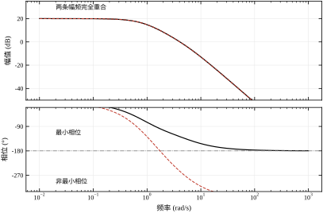
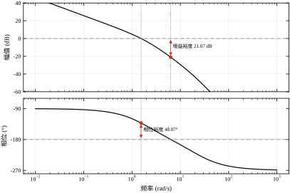
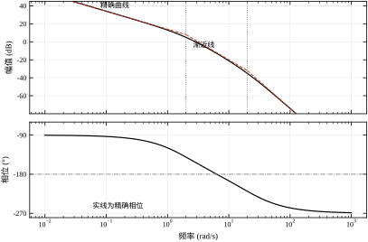
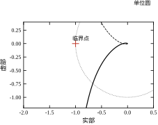
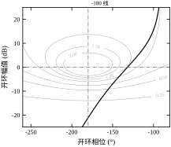
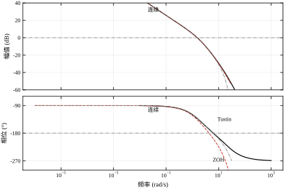
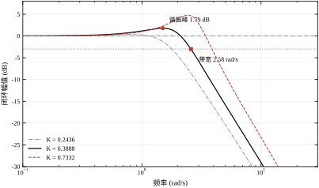
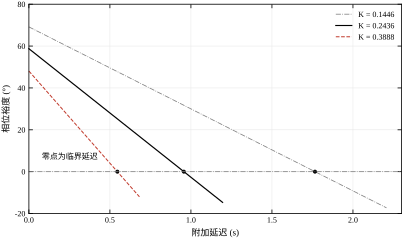
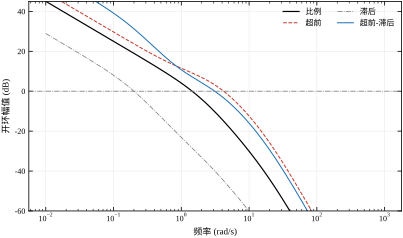
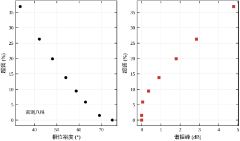

本章的一句话核心思想：把 s=\mathrm{j}\omega 代进去，系统就从一个“微分方程”变成一条“随频率变化的复数曲线”；稳定裕度是这条曲线离临界点多远，动态性能是这条曲线在穿越频率附近的形状。
在工业现场，调试工程师最常被问到的三个问题是：
这三个问题的答案，都可以从同一张图上读出来——开环频率响应 L(\mathrm{j}\omega) 的 Bode 图。第一个问题读增益裕度，第二个问题读穿越频率与带宽，第三个问题读相位裕度并折算成时间。
把三个答案落到主例上，位置会更具体。主例 L=10/[s(s+2)(0.05s+1)]、K=0.3888 时：幅频在 \omega_c=1.5369 rad/s 处穿过 0 dB，这一点的相位是 -131.94^{\circ}，所以“还能加多少增益”看的是 \omega=6.3246 处那条水平线到 0 dB 的距离（21.075 dB，即 11.3 倍）；“响应够不够快”看的是 \omega_c 右侧曲线下降的陡度，它决定了闭环带宽 2.5796 rad/s；“能扛多少延迟”是 48.065^{\circ} 除以 1.5369，得 0.5458 s。三个答案、三个数、同一张图，彼此不矛盾也不重复。
这张图的特别之处在于：它不需要知道闭环极点在哪，也不需要解高阶方程。只要能把开环传递函数写成若干个一阶、二阶因子的乘积，就能逐段画出折线，把三个问题一次答完。
三个答案还必须分开报，因为它们对同一个旋钮的反应并不一致。仍以主例为例，把 K 从 0.3888 调到 0.7332（+5.5 dB）：G_M 从 21.08 掉到 15.57 dB（-26\%），\varphi_M 从 48.07^{\circ} 掉到 33.61^{\circ}（-30\%），T_{d,\max} 从 0.5458 s 掉到 0.2490 s（-54\%），带宽却从 2.58 涨到 3.88 rad/s（+50\%）。同一个动作，四个数里有一个在变好、三个在变坏，而且坏得最厉害的是延迟裕度。 这就是为什么不能只说“我留了 20 dB 增益裕度，够了”——那句话对第三个问题完全没回答。
还有一层现实理由。现场调试时，工程师手上的信息往往只有“改一个参数、看一次响应”，而每次试错都有成本——设备要停机、工件要报废、有时还有安全风险。频域法把这些试错搬到了纸上：先在图上把“增益再加 3 dB 会怎样”算出来，再到现场只做一次确认。这是它比“试出来”更可取的根本原因。
教科书讲稳定性，习惯从特征方程出发：写出 1+L(s)=0，求根，看实部符号。这条路在纸面上很干净，在现场却经常走不通——因为现场往往拿不到微分方程。
一台变频器带电机，你能测的是：给一个正弦指令，等稳态，量输出的幅值和相位差；换个频率，再测一次。测二十个点，就得到一条实测频率响应。你不需要知道电机里有几个极点、参数是多少，曲线本身就包含了全部信息。
这件事在数学上是有根据的：对线性时不变系统，频率响应与冲激响应是一对傅里叶变换，两者包含同样的信息。问题不在于“频率响应够不够”，而在于“会不会读”。
所以本章的立场与第 39 章一致：先承认现场只有曲线，再教怎么从曲线里把工程结论抠出来。
扫频得到的是一条离散的点列，而设计需要的是连续曲线上的几个特定位置。两者之间的桥就是“插值加展开”：把实测点在对数频率坐标上连起来，读出幅频过 0 dB 的频率、该频率上的相位，再读出相频过 -180^{\circ} 的频率与该处的幅值。这一步的误差主要取决于点有多密——每十倍频程 2 个点时 \omega_c 会偏 -3.95\%，5 个点时降到 -0.66\%，10 个点时就只有 -0.02\%（表 41-17）。“扫得够不够细”不是经验问题，而是可以直接算出来的精度预算。
还有一件事要提前说清：扫频给的是开环频率响应，而现场往往只能闭环运行。闭环也不是不能测——§41.6 的换算链可以反过来用，从闭环幅频的谐振峰推回开环相位裕度——但精度会差一截，因为换算依赖“二阶主导”这个前提，而现场对象很少规矩到二阶。所以只要条件允许，仍然优先做开环扫频：断开反馈、注入小幅正弦、逐点记录、最后把断点接回去。断开与接回的顺序、接回时的初始状态，都要写进作业指导书，否则一次带电接线就可能把执行器打到限位。
一个开环传递函数总能分解成若干基本因子的乘积：
L(s)=K\cdot\frac{\prod_i(s-z_i)}{\prod_j(s-p_j)}=K\cdot\frac{(1+T_1s)(1+T_2s)\cdots}{s^N(1+\tau_1s)(1+\tau_2s)\cdots}\tag{41-1}
代 s=\mathrm{j}\omega 之后，每个因子都是一个复数。取模、取对数：
20\lg|L(\mathrm{j}\omega)|=20\lg K+\sum_i 20\lg|1+\mathrm{j}\omega T_i|-\sum_j 20\lg|1+\mathrm{j}\omega\tau_j|-20N\lg\omega\tag{41-2}
乘积变成了求和。 这就是 Bode 图用对数坐标的全部理由：每一项都可以独立画成一条折线，然后把折线叠加起来。叠加的结果在低频和高频都近似为直线，转折处用几个 dB 的圆角过渡。
相位也类似：每个因子贡献一个相角，总相位是各因子相角之和。相角不能简单叠加成折线，但它有明确的上下界——每个一阶因子最多贡献 90^{\circ}，每个二阶因子最多 180^{\circ}。
这条“折线可叠加”的性质有一个必须记住的代价：每条折线在转折点处都有 3.01 dB 的误差，因为 20\lg\sqrt{2}=3.01。一个转折点是 3.01 dB，三个极点挤在一起就会叠成 9 dB 以上。主例的两个转折点相距十倍频程，彼此干扰很小，所以表 41-3 里两个转折点的偏差都是 -3.054 dB——比 3.01 多出的那 0.04 dB 正是另一个极点的残余贡献。折线法的精度上限就由这 3 dB 决定，想更准只能逐点算，没有中间道路。
还有一层便利常常被低估：对数坐标把“倍频”变成了“等距离”。无论增益是 0.01 还是 100，10 倍频程在纸面上永远是同样长的一段，所以同一张图纸可以同时容纳 0.1 rad/s 与 1000 rad/s。这在现场手绘时尤其重要——工程师不必先算清楚曲线会延伸到哪，画就行了。
“这个回路稳不稳”这句话，在频域里可以拆成三个更具体的问题：
三者的关系不是并列的，而是同一笔相位账的三种记法。增益裕度问的是“幅值还能走多远”，相位裕度问的是“现在还剩多少度”，延迟裕度问的是“这些度值多少秒”。第 §41.2.6 会把它们写成公式，第 §41.9.1 会证明：在单穿越的情形下，延迟裕度精确等于相位裕度除以穿越频率，不是估算，是恒等式。
以主例 K=0.3888 为例，三个数分别是 21.075 dB（即 11.32 倍）、48.065^{\circ}、0.5458 s。三者可以互相校验：把增益乘 11.32，幅频整体上移 21.075 dB，\omega_c 恰好被推到 \omega_{180}=6.3246，相位裕度归零；把 0.5458 s 的纯延迟串进去，相频在 \omega_c 处下压 48.065^{\circ}，相位裕度同样归零。两条路径通向同一个临界点——这不是巧合，而是“三种裕度描述同一个边界”的直接体现。
反过来说，如果三个数算出来彼此矛盾，那一定是读错了频率，最常见的是把折回后的相位当成了连续相位，或者把 \omega_c 与 \omega_{180} 用反了。三个裕度互相校验，是频域法自带的一道自检：它不需要额外的模型信息，只要三个数出自同一张图。
第 39 章已经讲过 Nyquist 判据、Bode 判据与根轨迹判据的等价性，重点是“怎么判稳”。本章不再重复判据的推导，而是回答另外三个问题：
一句话：第 39 章回答“稳不稳”，本章回答“稳到什么程度、还能怎么改”。第 39 章的结论会在本章被反复引用，但推导只出现一次。
§41.2 把频率响应的数学结构讲清楚，重点是“乘法变加法”和“最小相位”两件事；§41.3 给出六步读图流程；§41.4 用主例把连续情形的三条曲线（Bode、Nyquist、Nichols）走一遍；§41.5 处理离散情形，说明零阶保持器吃掉多少相位；§41.6 建立“裕度→谐振峰→超调”的换算链；§41.7 逐个参数讲影响方向；§41.8 给出整定方法与边际价格；§41.9 讨论延迟、多穿越、非最小相位三个边界；§41.10 落到现场；§41.11 给优缺点；§41.12 是代码。
对线性时不变系统，输入 \sin\omega t 时，稳态输出是 |L(\mathrm{j}\omega)|\sin(\omega t+\angle L(\mathrm{j}\omega))。也就是说，频率响应回答的是“这个频率的正弦信号，被放大多少倍、滞后多少度”。
这个定义看起来简单，但它暗含两个前提：系统稳定（否则没有稳态）、输入是纯正弦（否则要叠加）。这两条在工程上都成立：我们讨论的频段内系统是稳定的，而任何周期信号都能分解成正弦。
把 s=\mathrm{j}\omega 代进传递函数，实部与虚部分开：
L(\mathrm{j}\omega)=P(\omega)+\mathrm{j}Q(\omega),\qquad |L|=\sqrt{P^2+Q^2},\qquad \angle L=\arctan\frac{Q}{P}\tag{41-3}
注意 \arctan 只能给出 (-90^{\circ},90^{\circ}) 的主值，实际相角要按象限补 180^{\circ}。这是读 Bode 图第一个容易出错的地方：软件给你的是折回后的相位，不是连续相位。本章所有表格里的相位都是连续展开的，例如 -195.26^{\circ} 而不是 +164.74^{\circ}。
把定义落到可测的量上，频率响应就是两个数的比值：幅值比 |L| 与相位差 \angle L。测这两个数不需要任何模型，只需要一台能产生正弦的激励源和一台能测幅相的仪器。这一点决定了频域法的基本性格——它从测量出发，而不是从建模出发。第 37、38 章的做法是先有模型再算响应，本章反过来：先有响应，模型只是用来解释响应为什么长成这样。
“稳态”这两个字也要落实。输入正弦之后，输出要经过一段暂态才进入同频正弦。暂态的长短由回路最慢的极点决定，主例 K=0.3888 时调节时间 4.295 s，意味着每个频点至少要等四五秒才能读数。低频点等得久、高频点等得快，这正是扫频试验在高频段可以加速、在低频段必须耐心的原因。
任何有理传递函数都能拆成五种因子的乘积。把这五种因子的渐近斜率与相位范围背下来，Bode 图就能手绘。
表 41-1 五种基本因子的渐近斜率与相位贡献
| 因子 | 高频渐近斜率 | 相位贡献 | 相位主要变化区间 |
|---|---|---|---|
| 增益 K | 0 | 0^{\circ}（K<0 时 \pm180^{\circ}） | 全频段 |
| 积分 1/s | -20 dB/dec | -90^{\circ} | 全频段 |
| 一阶极点 1/(1+\tau s) | -20 dB/dec | 0\to-90^{\circ} | 0.1/\tau 到 10/\tau |
| 一阶零点 1+Ts | +20 dB/dec | 0\to+90^{\circ} | 0.1/T 到 10/T |
| 二阶环节 \omega_n^2/(s^2+2\zeta\omega_ns+\omega_n^2) | -40 dB/dec | 0\to-180^{\circ} | 0.1\omega_n 到 10\omega_n |
表里最有用的一列是最后一列：相位在转折频率前后各一个十倍频程内变化，之外基本不变。这条经验让人可以在不画精确曲线的情况下，估算任意频率处的相位：数一数这个频率“看到”了几个极点、几个零点，每个近似贡献 -90^{\circ} 或 +90^{\circ}，再看它离转折点多远做修正。
以主例 L=10/[s(s+2)(0.05s+1)] 为例，在 \omega=1 rad/s 处：积分器贡献 -90^{\circ}；极点 -2 距此只有两倍，贡献约 -26.6^{\circ}；极点 -20 距此二十倍，贡献约 -2.9^{\circ}。合计 -119.5^{\circ}，与实测 -119.43^{\circ} 相差不到 0.1^{\circ}。这种“数极点+估修正”的手算法，精度足够做设计初稿。
拆因子时有一个动作必须做：把每个因子归一化成 (1+\tau s) 的形式。主例的分母是 s(s+2)(0.05s+1)，第二个因子要写成 2(1+0.5s)，于是 L=5/[s(1+0.5s)(1+0.05s)]。三个转折频率立刻显形：积分器没有转折，1/0.5=2，1/0.05=20。归一化之后，低频渐近线是 5/\omega，在 \omega=0.1 处给出 50 倍即 33.98 dB，与实测 33.968 dB 只差 0.01 dB。常数因子 5 就是“低频增益”，它决定整条曲线的上下位置；三个时间常数决定三个转折点。 把这两类信息分开，是画折线的第一步。
如果某个因子是二阶的，归一化后要检查阻尼比 \zeta。\zeta<0.3 时幅频在 \omega_n 附近已经出现 5 dB 以上的峰（\zeta=0.2 时约 8 dB，\zeta=0.1 时约 14 dB），折线法完全跟不上——这种情形不能用折线，必须直接算点。本章主例没有二阶环节，所以三段折线足够。
Bode 图有一个很深的性质：幅频的斜率与相频的大小是绑定的。对最小相位系统，若某频段的斜率是 -20n dB/dec，则该频段的相位约为 -90n 度。
这条规律可以从单因子看出来：一个积分器斜率 -20、相位 -90；两个积分器 -40、-180；三个 -60、-270。一阶极点在远离转折点的频段，等效于一个积分器。
本章主例的实测把这条规律验证得很干净（数据见 §41.4.2）：在 2 到 20 rad/s 之间，两个极点都已“生效”、第三个极点还没到，斜率恰好 -40.00 dB/dec，中点相位恰好 -180.00^{\circ}。斜率与相位的对应不是近似，在纯斜率段是精确的。
这条性质的工程价值在于：看到相位掉得太快，就知道斜率太陡；想让相位抬起来，就得把斜率抬起来。整形手段（加零点、加超前）之所以有效，本质都是局部把斜率改小。
用这条规律时要分清两个“斜率”：一是折线的渐近斜率，只取 -20 的整数倍；二是实测曲线的差商，可以是任意值。表 41-4 算的是后者——用相邻十倍频程的两个点做差。第一段差商 -20.97，略陡于 -20，因为第二极点已经开始“提前起作用”；第三段恰好 -40.00，因为这一段两端都远离转折点，两个极点都已完全生效、第三极点还没到。差商等于整数倍的地方，就是纯斜率段；偏离整数倍的地方，就是过渡段。 用这个判据可以一眼看出过渡段有多宽：主例的过渡段大约占了 0.5 到 5 这一整段，宽度接近一个十倍频程。
过渡段的宽度还有一个用处：它决定了“用斜率估相位”的误差有多大。纯斜率段误差为零，过渡段则要看过渡有多陡：主例 0.5 到 5 这一段差商 -28.60，按“斜率乘 90^{\circ}”估出 -128.7^{\circ}，实测中点 -132.85^{\circ}，差 4^{\circ}；而 5 到 50 那一段差商 -47.70 估出 -214.7^{\circ}，实测 -211.12^{\circ}，差 3.6^{\circ}。两段的误差都在 5^{\circ} 以内，比很多人担心的要小。 真正会出大错的情形是转折点密集（两个极点相距不到两倍），那时过渡段很窄、差商变化剧烈，按斜率估会偏十几度，此时必须逐项用 \arctan 累加。
有一类系统，它的相频完全由幅频决定，不需要额外信息。这类系统叫最小相位系统，条件是：所有零点、极点都在左半平面（或虚轴上的原点）。
对这类系统，存在一个积分关系（Bode 增益-相位关系），可以粗略写成：
\angle L(\mathrm{j}\omega_0)\approx\frac{1}{\pi}\int_{-\infty}^{\infty}\frac{\mathrm{d}\ln|L|}{\mathrm{d}u}\ln\coth\frac{|u|}{2}\,\mathrm{d}u,\qquad u=\ln\frac{\omega}{\omega_0}\tag{41-4}
这个积分不必手算，它的意义只有一句话：相位是斜率的加权平均，权重在 \omega_0 附近最大。所以“某频率的相位”主要由“该频率附近的斜率”决定，远处斜率的影响被对数权重压小。
工程上常用的简化版本就是 §41.2.3 的“斜率乘 90^{\circ}”。式 (41-4) 的真正用途是解释两个现象：为什么相位在转折点附近变化最快（斜率正在变），为什么远离所有转折点的频段相位很“干净”（斜率恒定）。
“幅频唯一决定相频”这句话反过来还有诊断价值：若实测相频比按最小相位算出来的更负，多出来的那部分一定来自右零点或纯延迟。区分方法很简单——右零点的相位贡献有上界（最多 -180^{\circ}），而纯延迟没有上界，它随频率线性下降、永不饱和。所以看到“相位一路往下掉、高频段斜率恒定”就是延迟；看到“相位掉到某个值就停住”就是右零点。§41.10.4 的方法三就是这条判据的定量版。
这条判据在实际中很有用，因为两者在幅频上都不留痕迹：延迟让幅频完全不变；右零点在幅频上表现为一个普普通通的零点（高频斜率抬 20 dB/dec），左右半平面看不出任何区别。只看幅频，两个都容易被当成“多了一个零点”；看相频，一个一路下滑、一个有界饱和，立刻分得开。
只要有一个零点在右半平面，最小相位的前提就破了。这时幅频相同、相频可以差很多。
组 7 构造了一对极端的例子：两个系统共用分母 (s+1)^2(0.2s+1)，分子分别是 1+0.5s（零点 -2）与 1-0.5s（零点 +2）。因为 |1+\mathrm{j}0.5\omega|=|1-\mathrm{j}0.5\omega|，两者的幅频逐点相同；相频却分道扬镳：
表 41-2 最小相位与非最小相位的相频对照（幅频逐点相同）
| \omega/(rad/s) | 幅频/dB | 最小相位/(°) | 非最小相位/(°) | 差值/(°) |
|---|---|---|---|---|
| 0.1 | -0.077 | -9.70 | -15.43 | -5.73 |
| 0.5 | -1.718 | -44.80 | -72.88 | -28.08 |
| 1.0 | -5.222 | -74.74 | -127.87 | -53.13 |
| 2.0 | -11.614 | -103.67 | -193.67 | -90.00 |
| 5.0 | -22.706 | -134.18 | -270.58 | -136.40 |
| 10.0 | -32.926 | -153.32 | -310.70 | -157.38 |
差值在 \omega=2（右零点转折频率的倒数位置）处恰好 -90^{\circ}，高频趋于 -180^{\circ}。这正是右半平面零点的相位贡献：它不提供超前，反而提供滞后，最大到 -180^{\circ}。
后果在裕度上：同样取 K=10，最小相位对象的相位裕度是 52.27^{\circ}、增益裕度无穷大；非最小相位对象的相位裕度是 -75.43^{\circ}、增益裕度 -9.90 dB——已经不稳定了。两者的幅频曲线一模一样，只看幅频永远发现不了问题。

图 41-2 上，两条幅频曲线完全重合，相频在右零点附近分开，非最小相位那条一路跌到 -310^{\circ}。这张图是“只看幅频会骗人”的最直接证据。
表 41-2 的差值列还有两个可读的细节。第一，\omega=2 处差值恰好 -90.00^{\circ}：该处 \omega T=1，左零点的相角是 +45^{\circ}、右零点的相角是 -45^{\circ}，两者相差 90^{\circ}；而分母对两个系统完全相同，不贡献差值。第二，低频端（\omega=0.1）差值只有 -5.73^{\circ}，不是零——右零点即使远在二十倍之外，也已经“闻到”了，这正是式 (41-4) 里那个对数权重的尾巴。低频段的少量偏差最危险，因为它容易被当成测量误差放过，而它恰恰是“这个对象不能按最小相位处理”的第一个信号。
工程上的后果不止是裕度变小。右零点还会让阶跃响应出现“先反向”的初始段（§41.4.6 会展开），这意味着控制器在错误方向上先推一把。若这个反向段触发了执行器限幅或工艺联锁，问题就不再是稳定性，而是能不能开机。
设 L(\mathrm{j}\omega) 的幅值穿越频率为 \omega_c（|L|=1 处），相位穿越频率为 \omega_{180}（\angle L=-180^{\circ} 处）。三个裕度定义为
G_M=\frac{1}{|L(\mathrm{j}\omega_{180})|}\quad\text{或}\quad G_M^{\rm dB}=-20\lg|L(\mathrm{j}\omega_{180})|\tag{41-5}
\varphi_M=180^{\circ}+\angle L(\mathrm{j}\omega_c)\tag{41-6}
T_{d,\max}=\frac{\varphi_M}{\omega_c}\tag{41-7}
式 (41-5) 的两种写法要分清：倍数形式（G_M=2 表示增益还能翻一倍）与分贝形式（G_M=6.02 dB 表示同一件事）。现场口头说的“6 个 dB 裕度”是分贝形式，控制器参数表上的“增益余量 2 倍”是倍数形式。换算只有一步 20\lg，但混淆一次就会把安全系数差出十倍。
式 (41-7) 值得单独说明。它看起来像估算，其实是恒等式：纯延迟 \mathrm{e}^{-\mathrm{j}\omega T_d} 不改变幅值，只把相位整体下压 \omega T_d。临界条件是相位在 \omega_c 处刚好到 -180^{\circ}，即
180^{\circ}+\angle L(\mathrm{j}\omega_c)-\omega_cT_d=0\quad\Longrightarrow\quad T_d=\frac{\varphi_M}{\omega_c}\tag{41-8}
前提是 \omega_c 唯一。若幅频多次穿越 0 dB，延迟会把穿越点挪动，式 (41-7) 就不再成立（见 §41.9.2）。组 10 用 Padé 近似实测三个工作点的临界延迟，与式 (41-7) 在四位小数上一致（1.7657 对 1.7656、0.9564 对 0.9564、0.5458 对 0.5458），验证了单穿越下的恒等关系。
三个定义里还藏着两组符号约定，报数时必须说清。第一组，裕度为正表示“稳定”：这是对开环稳定（右半平面无极点）的系统而言的；若开环本身不稳定，正裕度并不保证闭环稳定，要回到 Nyquist 判据数圈数。第二组，\omega_{180} 可能不存在：一阶、二阶对象的相位永远到不了 -180^{\circ}，此时 G_M=\infty，报“无穷大”比报一个大数诚实。组 7 的最小相位对象就是这种情形，K=10 时 G_M 显示为 \mathrm{inf}。
还有一条容易混的口径：相位裕度是“到 -180^{\circ} 的距离”，不是“到 0^{\circ} 的距离”。所以 \varphi_M=48^{\circ} 的含义是“还能再滞后 48^{\circ}”，而不是“相位是 48^{\circ}”。主例 \omega_c 处的实际相位是 -131.94^{\circ}，180-131.94=48.06，两个数都对，但说的不是一回事。
闭环传递函数是
T(\mathrm{j}\omega)=\frac{L(\mathrm{j}\omega)}{1+L(\mathrm{j}\omega)}\tag{41-9}
取模：
|T|=\frac{|L|}{|1+L|}\tag{41-10}
式 (41-10) 说明：闭环幅值只取决于开环点 L 到原点的距离，以及它到 -1 点的距离。在复平面上，|T| 为常数的轨迹是一族圆（等 M 圆）；把这张复平面卷成“横轴相位、纵轴幅值 dB”的坐标，等 M 圆就变成 Nichols 图上的等值线。
工程上的用法很直接：把开环曲线画在 Nichols 图上，曲线与等 M 线的切点高度就是谐振峰 M_r，切点对应的频率就是谐振频率 \omega_r。不需要再算闭环传递函数。
组 6 用数值验证了这条读数法（K=0.3888）：开环点 |L|=0.290 dB、\angle L=-131.16^{\circ} 时，闭环 |T|=1.789 dB、\angle T=-63.48^{\circ}；而全频段扫描得到的谐振峰恰好是 1.789 dB，出现在 \omega_r=1.4950 rad/s。两个数完全对上，说明 Nichols 的等值线读法与直接计算是同一件事。
等值线的疏密也带信息。|T| 靠近 1（0 dB）的区域，等值线很稀——开环点在这个区域里移动，闭环增益几乎不变，系统“不敏感”；|T| 在 1.3 到 2（2 到 6 dB）的区域，等值线开始挤在一起，开环点稍微一动，闭环增益就明显变化。曲线与等值线相切的地方，就是“最敏感”的点，它对应谐振峰，也对应阶跃响应超调最大的那个模态。这就是为什么 M_r 比相位裕度更能预测超调：相位裕度只是一个截面的读数，M_r 是整条曲线的极值。
读 Nichols 图按三步走：先找曲线与 0 dB 横线的交点，读出该点横坐标，180^{\circ} 减去它就是相位裕度；再找曲线与 -180^{\circ} 竖线的交点，读出该点纵坐标的相反数，就是增益裕度；最后沿曲线找与等值线的最内切点，读出切点所在等值线的值，就是 M_r。三个裕度在同一张图上，一次读完——这是 Nichols 图相对 Bode 图的唯一实质优势，其余都是习惯问题。
读一张 Bode 图，按下面六步走，不会漏项。
第一步，写成标准形式。 把 L(s) 写成式 (41-1) 的因子乘积，数清极点个数 n、零点个数 m、右半平面零点个数。这一步决定低频斜率（-20N dB/dec，N 是积分器个数）与高频斜率（-20(n-m) dB/dec）。
第二步，画三段折线。 从最低频开始，按转折频率逐段改斜率。每个一阶极点让斜率减 20，每个一阶零点让斜率加 20，每个二阶环节减 40。转折点处用 -3 dB 的圆角修正。
第三步，读两个穿越频率。 \omega_c 是幅频穿过 0 dB 的点，\omega_{180} 是相频穿过 -180^{\circ} 的点。若相频没有穿过 -180^{\circ}，增益裕度为无穷大。
第四步，算三个裕度。 用式 (41-5)、(41-6)、(41-7)。三个数一起报，不许只报一个。
第五步，换算闭环指标。 由 \varphi_M 估 \zeta、由 M_r 估超调、由 \omega_c 估带宽与上升时间。换算系数见 §41.6。
第六步，归档。 把 \omega_c、\omega_{180}、G_M、\varphi_M、T_{d,\max}、M_r、\omega_b 七个数写进设计记录。这七个数是本章的全部产出，其余都是过程。
六步的顺序不是随意的，它对应一条“信息从少到多”的链：第一步只用品因子得到结构信息（阶数、型别）；第二步把结构信息变成几何（折线）；第三步从几何里取出两个频率；第四步把频率换算成裕度；第五步把裕度换算成性能；第六步把性能固化成记录。每一步的输入都是上一步的输出，中间没有回头路，所以任何一步偷懒，后面都会放大成错误。
现场最常被跳过的恰恰是第一步与第六步。跳过第一步的人直接打开仿真软件画精确曲线，图画得很漂亮，却说不出“为什么高频是 -60 dB/dec”——一旦实测曲线的高频斜率是 -40，他无法判断是模型少了一个极点还是测量频段不够。跳过第六步的人调完就完，三个月后同一台设备换人维护，所有参数都得从头再试一遍。这两步不产生新数字，但它们决定了这些数字能不能被别人使用。
以 L=10/[s(s+2)(0.05s+1)] 为例，手绘过程如下。
低频段：只有一个积分器起作用，斜率 -20 dB/dec。在 \omega=0.1 处，|L|\approx10/(0.1\times2)=50，即 34.0 dB。实测 33.968 dB，差 0.03 dB。
第一个转折 \omega=2：斜率从 -20 变 -40。转折点处精确值比渐近线低 3 dB——这是所有单极点转折点的固定修正。
第二个转折 \omega=20：斜率从 -40 变 -60。同样有 -3 dB 修正。
高频段：斜率 -60 dB/dec，即幅值按 \omega^{-3} 衰减。
把三段折线画出来，与精确曲线的偏差列成表 41-3（数据见 §41.4.1）。手绘折线的误差在转折点最大（-3.05 dB），在远离转折点的地方小于 1 dB。做初步设计，这个精度足够。
手绘时不必逐点算，只需在每段上取一个点验证斜率。低频段取 \omega=0.1：|L|\approx5/0.1=50，20\lg50=33.98 dB，落在表 41-3 的第一行。第二段（2<\omega<20）取 \omega=10：|L|\approx10/\omega^2=0.1，即 -20 dB，与实测 -21.139 dB 差 1.1 dB。高频段（\omega>20）取 \omega=100：|L|\approx200/\omega^3=2\times10^{-4}，即 -73.98 dB，与实测 -74.151 dB 差 0.17 dB。三个点验完，三段斜率就都确认了，整张图的骨架也就定了。
手绘的产物不是一条精确曲线，而是一张“骨架图”。骨架图上有三样东西必须标出来：三段斜率、两个转折频率、低频段在某一频率上的绝对高度。有了这三样，任何频率处的幅值都能在两分钟内估到 1 dB 以内，不需要计算器。现场讨论“要不要把增益加一倍”时，这张骨架图比一台笔记本有用——因为它把“加一倍等于整条曲线上移 6 dB”这件事直接画在了纸上。
方法一，数极点。 在待求频率处，数一数左边有几个极点、几个零点，每个贡献 \pm90^{\circ}，再按距离做修正。这个方法适合快速估算。
方法二，逐段累加。 每个一阶因子在 \omega 处的相角是 -\arctan(\omega\tau)，逐项算出来相加。这个方法适合精确读数，一只计算器就够。
以 \omega=1 为例：-\arctan(1/2)=-26.57^{\circ}，-\arctan(1/20)=-2.86^{\circ}，加积分器的 -90^{\circ}，得 -119.43^{\circ}，与实测完全一致。以 \omega=6.3246 为例：-\arctan(3.1623)=-72.45^{\circ}，-\arctan(0.3162)=-17.55^{\circ}，加 -90^{\circ}，得 -180.00^{\circ}——这正是相位穿越频率。
手算相位时不要用计算器的 \arctan 主值，要按象限判断。习惯做法是先画个草图，确定相角在第几象限，再取主值加修正。
再补一个“转折点上”的例子，因为这是误差最大的位置。取 \omega=2：-\arctan(1)=-45.00^{\circ}，-\arctan(0.1)=-5.71^{\circ}，加 -90^{\circ}，得 -140.71^{\circ}，与表 41-3 的 -140.71^{\circ} 逐位一致。同一个点，方法一（数极点）给的是“一个极点完全生效 -90^{\circ}，另一个还在远处 -6^{\circ}”再加积分器 -90^{\circ}，合计约 -186^{\circ}——差了 45^{\circ}。 差在哪？差在“完全生效”这个近似：转折点上极点只贡献 -45^{\circ}，不是 -90^{\circ}。所以方法一在转折点附近必须打折，方法二不需要。
两种方法的分工可以这样记：方法一用来判断“相位大概在哪个区间”，方法二用来读数。前者三十秒，后者三分钟，但前者可能差 30^{\circ} 到 45^{\circ}，后者差不到 0.1^{\circ}。做初稿先用方法一定骨架，定完骨架用方法二在关键频率上逐点核对，这是效率与精度的折中。
仍以 K=1 为例。由 §41.3.3，\omega_{180}=6.3246。此时幅值 |L|=0.2273（第 39 章已算），故
G_M^{\rm dB}=-20\lg0.2273=12.87\ \mathrm{dB}
幅值穿越频率 \omega_c=2.8461，该处相位 -153.00^{\circ}，故
\varphi_M=180^{\circ}-153.00^{\circ}=27.00^{\circ}
延迟裕度
T_{d,\max}=\frac{27.00^{\circ}}{2.8461}\times\frac{\pi}{180^{\circ}}=0.1656\ \mathrm{s}
三个数与组 2 的输出逐位一致。注意延迟裕度只有 0.17 s——这个回路看起来有 12.9 dB 的增益裕度，似乎很安全，但 166 ms 的延迟就能让它失稳。现场的通信延迟、滤波延迟、执行器响应加起来很容易超过这个数。
这里有一个必须讲透的反差：K=1 时增益裕度 12.87 dB（还能把增益放大 4.4 倍），听起来余量充足；可相位裕度只有 27.00^{\circ}，延迟裕度只有 0.166 s。两个数描述的其实是两个不同频率上的余量：12.87 dB 是在 \omega_{180}=6.3246 处测的，那里离 \omega_c=2.8461 已经远了一倍多；而延迟吃的是 \omega_c 处的相位，与 \omega_{180} 处的幅值无关。所以“增益裕度大”和“抗延迟能力强”是两件事，不能互相代替。
把增益降到 K=0.3888，三个数一起变好：G_M 升到 21.075 dB、\varphi_M 升到 48.065^{\circ}、T_{d,\max} 升到 0.5458 s。三个裕度同向变化，这才是“降增益换安全”的完整账；只报 G_M 会让人以为收益是 8 dB，实际收益是“延迟容忍度涨了三倍”。
反过来看，如果只盯 G_M，很容易做出错误决策：K=1 时 12.87 dB 已经超过很多验收标准里的 10 dB，看上去合格；但 \varphi_M=27^{\circ} 与 T_{d,\max}=0.166 s 都低于表 41-18 的区间下限。三个数里只要有一个不合格，这个工作点就不能验收，这是本章反复强调“三个一起报”的现实理由。

图 41-5 把三个量画在同一张 Bode 图上：上图用双向箭头标出 \omega_{180} 处幅值到 0 dB 的距离（增益裕度），下图用双向箭头标出 \omega_c 处相位到 -180^{\circ} 的距离（相位裕度）。两条箭头的长度就是两个裕度，方向都指向“还能走多远”。
三个裕度只是中间量，验收单上写的是超调、调节时间、带宽。换算链是：
\varphi_M\ \longrightarrow\ \zeta\ \longrightarrow\ M_p,\qquad M_r\ \longrightarrow\ M_p,\qquad \omega_c\ \longrightarrow\ \omega_b\ \longrightarrow\ t_r
第一段用第 39 章的经验式 \zeta\approx\varphi_M/100（\varphi_M 以度为单位）；第二段用 M_r=1/(2\zeta\sqrt{1-\zeta^2})；第三段用 \omega_b t_r\approx2.1（本章组 9 实测在 1.94 到 2.15 之间）。
以 K=0.3888 为例：\varphi_M=48.07^{\circ}，估 \zeta=0.48（实测 0.456）；\zeta=0.456 代入得 M_r=1.25 倍即 1.94 dB（实测 1.789 dB）；\omega_b=2.5796，估 t_r=2.1/2.5796=0.81 s（实测 0.799 s）。三步换算的误差都在 10\% 以内，作为设计初稿完全够用。
把每一步的算式摊开，能看清误差从哪来。第一段：\zeta_\varphi=48.065/100=0.4807，代进式 (41-14) 得 M_p=\exp(-1.5102/0.8770)=17.87\%；实测 19.899\%，低估 2.03 个百分点。误差全部来自“\varphi_M/100”这个经验式本身，它与真实主导极点的 \zeta=0.4571 差了 0.0236。
第二段：若改用实测 \zeta=0.4571，式 (41-15) 给 M_r=1/(2\times0.4571\times\sqrt{1-0.2089})=1.2299，即 1.797 dB，与实测 1.789 dB 只差 0.008 dB。这说明链二本身几乎无误差，问题出在输入端——输入一个偏大的 \zeta，输出必然偏小。
第三段：用 \omega_bt_r=2.1 这个“教科书常数”，2.1/2.5796=0.814 s，实测 0.799 s，高估 1.9\%。若按表 41-9 在 M_p\approx20\% 处取 2.06，得 0.799 s，恰好对上。三段误差里，两段可以被一条更细的表修正，一段不能——不能修正的那段（\varphi_M\to\zeta）正是应该只用于定性判断的那段。
按六步走，有三种情况会走不下去，各有各的处理。
分支一，幅频不穿越 0 dB。 说明开环增益太小，闭环带宽极低。此时相位裕度无穷大，系统“稳得没法用”。处理：加增益，或检查对象增益是否标错。
分支二，相频不穿越 -180^{\circ}。 说明相位最多只掉到 -180^{\circ} 以上（典型是一阶或二阶对象）。此时增益裕度无穷大，理论上任意增益都稳定。处理：不必看增益裕度，只看相位裕度与带宽；但要注意模型降阶是否漏掉了高频极点。
分支三，幅频多次穿越 0 dB。 这时“\omega_c”不唯一，三个裕度都要分别算，取最坏的一个。多次穿越常见于条件稳定系统与带谐振峰的对象（见 §41.9.2）。
三个分支里，第二支最容易处理错。相频不穿 -180^{\circ} 时增益裕度是无穷大，很多人就写“G_M=\infty，非常安全”然后收工。但无穷大的增益裕度只说明“没有增益能让它失稳”，不说明“这个回路能干活”：带宽可能只有 0.1 rad/s，负载一变要十几秒才回来。正确做法是把注意力转到相位裕度与带宽上，并且回头检查模型——高频极点被降阶丢掉时，真实的相频是会穿 -180^{\circ} 的，只是仿真里没看见。
第三支的隐患是“取最坏的一个”这句话太笼统。多次穿越时，不同穿越点对应的临界延迟不同，必须按式 (41-18) 逐个算再取最小；而“最坏的增益裕度”可能是另一个穿越点给的。两个裕度的最坏值不一定出现在同一个频率上，设计记录里要把每个穿越点的一组数都写下，而不是只留一个汇总值。
主例 L=10/[s(s+2)(0.05s+1)] 的精确幅频与三段渐近线的对比如表 41-3。
表 41-3 精确幅频与三段渐近线的偏差（K=1，相位为连续展开值）
| \omega/(rad/s) | 精确/dB | 渐近/dB | 偏差/dB | 相位/(°) |
|---|---|---|---|---|
| 0.1 | 33.968 | 33.979 | -0.011 | -93.15 |
| 0.5 | 19.734 | 20.000 | -0.266 | -105.47 |
| 1.0 | 12.999 | 13.979 | -0.980 | -119.43 |
| 2.0 | 4.905 | 7.959 | -3.054 | -140.71 |
| 4.0 | -5.222 | -4.082 | -1.139 | -164.74 |
| 10.0 | -21.139 | -20.000 | -1.139 | -195.26 |
| 20.0 | -35.095 | -32.041 | -3.054 | -219.29 |
| 40.0 | -51.083 | -50.103 | -0.980 | -240.57 |
| 100.0 | -74.151 | -73.979 | -0.172 | -257.54 |
两个转折点上的偏差都是 -3.054 dB，符合“单极点转折点低 3 dB”的经典结论；两个转折点之间的偏差在 -1.139 dB 附近，是相邻因子“提前生效”的结果。折线永远在精确曲线下方，因为每段折线都只算了主导因子，忽略了其他因子的幅值贡献。

图 41-1 上，实线是精确曲线，虚线是三段折线，两条竖点线标出 2 与 20 两个转折点。折线的价值不在精度，而在“一眼看出斜率”：-20\to-40\to-60 三次变化，对应三次极点，看图就知道系统是几阶。
表 41-3 的偏差列还藏着一个漂亮的对称。\omega=1 与 \omega=40 都是 -0.980 dB，\omega=4 与 \omega=10 都是 -1.139 dB，\omega=2 与 \omega=20 都是 -3.054 dB。三对数的乘积都是 40，几何中心恰好是 \sqrt{40}=6.3246——正是相位穿越频率。这不是巧合，而是“三个极点分别在 0、-2、-20”这一结构的必然结果：把 \omega 换成 40/\omega，幅频的偏差保持不变。这个对称在核对数据时很有用：若某一行的偏差与它的镜像对不上，说明程序里某个因子的系数写错了。
偏差的绝对值也有一条规律：离转折点越远越小，最近处约 -3 dB，十倍频程外降到 0.2 dB 以下。\omega=0.1 距第一个转折点二十倍，偏差只有 -0.011 dB；\omega=100 距第二个转折点五倍，偏差 -0.172 dB。所以做粗略估算时，只要工作在“转折点十倍之外”，折线值就可以直接当精确值用，不必修正。
把五个频段的斜率与中点相位放在一起，对应关系一目了然。
表 41-4 分段斜率与中点相位（K=1）
| 频段/(rad/s) | 斜率/(dB/dec) | 中点相位/(°) | 斜率/-20 |
|---|---|---|---|
| 0.1–1 | -20.97 | -99.89 | 1.05 |
| 0.5–5 | -28.60 | -132.85 | 1.43 |
| 2–20 | -40.00 | -180.00 | 2.00 |
| 5–50 | -47.70 | -211.12 | 2.39 |
| 20–200 | -56.99 | -250.64 | 2.85 |
第三行是纯粹的“双极点段”：斜率恰好 -40，相位恰好 -180^{\circ}，两者严格对应。其余各行处在过渡区，斜率是加权平均，相位也是加权平均，比例关系仍然近似成立（-20.97/-20=1.05 对应 -99.89/-90=1.11；-56.99/-20=2.85 对应 -250.64/-90=2.78）。
这张表还有一个用途：用斜率反推阶数。若某频段斜率是 -60，说明该频段已经“看到”三个极点，无论它们的转折频率具体在哪。现场的实测曲线若在这一段只有 -40，说明有一个极点比模型预计的更靠高频——这是模型降阶过度的典型信号。
表 41-4 的五段其实是一条连续的过程：窗口从低频往右移，越来越多的极点“进场”，差商就从 -20 一步步逼近 -60。第一段 0.1 到 1，第二极点在 2，窗口右端已经贴近它，所以差商 -20.97 略陡于 -20；第二段 0.5 到 5，第二极点完整落在窗口内，差商跳到 -28.60；第三段 2 到 20，两个极点都完整在窗口内，差商到 -40.00；第四段 5 到 50，第三极点进场，-47.70；第五段 20 到 200，三个极点全部生效，-56.99，逼近 -60。五段读下来，就是“极点逐个进场”的过程，斜率是这个过程的可视化。
第三段的特殊性还在于它恰好以 \omega_{180}=6.3246 为几何中心（\sqrt{2\times20}=6.3246）。在这个频率上，两个极点贡献的相角分别是 -72.45^{\circ} 与 -17.55^{\circ}，两者相加恰好 -90^{\circ}，加上积分器的 -90^{\circ} 就是 -180^{\circ}。“恰好 -180^{\circ}”与“恰好中点”是同一件事，因为两个极点关于 \sqrt{40} 互为镜像。
改变增益 K，整条幅频曲线上下平移 20\lg K，相频完全不动。这是 Bode 图最基本的操作。
由此可以立刻读出三个结论：
组 3 的六档数据把这三条全验证了（表 41-5）。
表 41-5 六档增益下的三种裕度（主例）
| K | G_M/dB | \varphi_M/(°) | \omega_c/(rad/s) | \omega_{180}/(rad/s) | T_{d,\max}/s |
|---|---|---|---|---|---|
| 0.1000 | 32.869 | 74.958 | 0.4857 | 6.3246 | 2.6934 |
| 0.2000 | 26.848 | 62.946 | 0.9094 | 6.3246 | 1.2081 |
| 0.3888 | 21.075 | 48.065 | 1.5369 | 6.3246 | 0.5458 |
| 0.7332 | 15.565 | 33.608 | 2.3561 | 6.3246 | 0.2490 |
| 1.1000 | 12.041 | 25.044 | 3.0100 | 6.3246 | 0.1452 |
| 2.2000 | 6.021 | 11.852 | 4.4242 | 6.3246 | 0.0468 |
\omega_{180} 一列六行完全相同，是“相位与增益无关”的直接证据。G_M 每翻倍掉 6.02 dB：32.869-6.02=26.85，26.85-6.02=20.83（实际 21.075，差 0.25 dB，来自 \omega_{180} 附近读数的微小插值误差）。
延迟裕度这一列最容易被忽略。 从 2.69 s 掉到 0.047 s，跨了 57 倍；而增益裕度只从 32.9 dB 掉到 6.0 dB，跨 5.5 倍。增益翻十倍，延迟裕度掉十倍——因为 \varphi_M 在下降、\omega_c 在上升，两者同时作用。
\omega_c 的移动速度也值得算一遍。K 每翻一倍，\omega_c 按 1.872、1.690、1.533、1.277、1.470 的比例递增，从接近 2 倍逐步降到接近 \sqrt{2}=1.414 倍。原因在斜率：低频段幅频按 \omega^{-1} 衰减，增益翻倍就要把频率推远一倍才能回到 0 dB；到了 K 较大时，\omega_c 已经进入 \omega^{-2} 段，增益翻倍只需频率乘 \sqrt{2}。“加同样的增益，速度收益越来越小”，在 Bode 图上就是这一列比值在缩小。
相位裕度的变化更不均匀。每翻一倍，\varphi_M 依次掉 12.01^{\circ}、14.88^{\circ}、14.46^{\circ}、8.56^{\circ}、13.19^{\circ}，折成每 dB 是 2.00、2.47、2.40、1.42、2.19 度。兑换率不是常数：在设计点附近（45^{\circ} 到 60^{\circ}）最贵，约 2.4 到 2.5^{\circ}/dB；在 25^{\circ} 附近反而便宜。 这个非单调性有一个实际后果——低裕度段“再降一点增益就能换回很多度”，看起来很容易补救，但那时响应已经振得很厉害，现场往往不敢再试。
把 L(\mathrm{j}\omega) 的实部作横轴、虚部作纵轴，\omega 从 0 扫到 \infty，就得到 Nyquist 曲线。它与 Bode 图包含同样的信息，只是换了坐标。
读法有三条：

图 41-3 是 K=0.3888 的 Nyquist 曲线（实线为上半平面，虚线为镜像）。单位圆用点线画出，-1 点用红色十字标出。曲线在负实轴上的穿越点离 -1 还有一段距离，这段距离就是增益裕度；曲线与单位圆的交点角度，就是相位裕度。
Nyquist 的独特价值在于处理多次穿越与开环不稳定。Bode 图上“相位穿了几次 -180”要靠数，Nyquist 上“绕了几圈”一眼可见。本章不重复判据，只在 §41.9.2 用 Nyquist 解释多次穿越为什么会让延迟裕度失效。
把主例 K=1 的数代进几何里，读数会很直观。在 \omega_{180}=6.3246 处，L=-0.2273，曲线穿过负实轴的位置是 (-0.2273,\,0)，它到 (-1,\,0) 的距离是 0.7727，比值 1/0.2273=4.40——这就是增益裕度的几何含义：负实轴上的穿越点还能往左走 4.4 倍才碰到临界点。在 \omega_c=2.8461 处，|L|=1、相角 -153.00^{\circ}，曲线与单位圆的交点位于负实轴上方 27^{\circ}，这段圆弧对应的圆心角就是相位裕度。
低频端也有可读的信息。主例含一个积分器，\omega\to0 时 |L|\to\infty、相角趋于 -90^{\circ}，所以曲线从负虚轴的无穷远处进场。若对象是 0 型（无积分器），曲线从正实轴上的有限点出发；这个起点就是直流增益，它决定了稳态误差（第 42 章）。Nyquist 图上的“起点在哪”，比 Bode 图上的低频渐近线更容易一眼认出。
Nichols 图的横轴是开环相位、纵轴是开环幅值（dB），把 Bode 的两张图压成一张。它的独特之处是叠了等闭环增益线：曲线与某条等值线相切，切点高度就是谐振峰。
组 6 的读数把这条性质验证得很彻底（表 41-6）。
表 41-6 Nichols 读数与闭环量的对照（K=0.3888）
| \omega/(rad/s) | \lvert L\rvert/dB | \angle L/(°) | \lvert T\rvert/dB | \angle T/(°) |
|---|---|---|---|---|
| 0.20 | 19.710 | -96.28 | 0.052 | -5.93 |
| 0.50 | 11.529 | -105.47 | 0.320 | -15.38 |
| 0.80 | 7.061 | -114.09 | 0.785 | -26.31 |
| 1.00 | 4.794 | -119.43 | 1.159 | -34.97 |
| 1.50 | 0.290 | -131.16 | 1.789 | -63.48 |
| 2.00 | -3.300 | -140.71 | 0.582 | -98.09 |
| 3.00 | -8.984 | -154.84 | -5.822 | -142.28 |
| 5.00 | -17.072 | -172.23 | -15.776 | -170.98 |
| 8.00 | -25.237 | -187.77 | -24.753 | -188.21 |
第五行是切点：开环 0.290 dB、-131.16^{\circ}，闭环 1.789 dB，正是全频段最大值。注意第六行：开环幅值还不到 -1 dB，闭环却已经掉到 0.582 dB——因为相位已经接近 -141^{\circ}，1+L 的模开始快速增大。这就是“相位比幅值更早报警”的定量表现。

图 41-4 上，黑色曲线是开环轨迹，灰色细线是 |T|=0.25 到 2.0 的等值线，两条点线分别标出 0 dB 与 -180^{\circ}。曲线在 1.5 rad/s 附近与最内侧的等值线相切，切点高度 1.789 dB 就是谐振峰。
表 41-6 的九行可以按“闭环跟随”分成三段来读。第一段 \omega\leq0.5：开环 19.7 dB 与 11.5 dB，闭环却只有 0.05 dB 与 0.32 dB——闭环增益几乎等于 1，说明输出已经跟上了指令，剩下的那点偏差全部来自相位：0.2 rad/s 处 \angle L=-96.28^{\circ}，1+L 的模比 |L| 略小，于是 |T| 略大于 1。第二段 0.8 到 2：开环从 7 dB 降到 -3.3 dB，闭环从 0.79 dB 升到峰值 1.789 dB 再回落到 0.58 dB，这一段是过渡带，也是谐振峰所在。第三段 \omega\geq3：开环低于 -9 dB，闭环跟着往下掉，到 8 rad/s 时开环 -25.2 dB、闭环 -24.8 dB，两者只差 0.5 dB——此时 1+L\approx1，闭环退化成开环。
三段的边界正好是 |L|=1 附近，也就是 \omega_c=1.5369。这不是偶然：|T|=|L|/|1+L| 在 |L|\gg1 时趋于 1、在 |L|\ll1 时趋于 |L|，转折区就在 |L|\approx1。所以“闭环带宽”这个概念与“开环穿越频率”天然绑在一起，前者大约是后者的 1.7 倍（2.5796/1.5369=1.68），这个比值取决于相位裕度，裕度越小比值越大、峰也越高。
§41.2.5 已经给出数据：同样 K=10，非最小相位对象的相位裕度从 +52.27^{\circ} 掉到 -75.43^{\circ}。换算成工程语言：右半平面零点把相位裕度吃掉了 128^{\circ}，而这个代价在幅频上一点都看不出来。
这类对象在工程上并不罕见：锅炉汽包水位（给水量增加初期水位反而下降）、飞机俯仰（升降舵上偏初期升力增加）、某些化学反应器（进料增加初期温度下降）。它们的共同特征是“先反向、后同向”，数学上就是右半平面零点。
处理办法只有两条：要么降增益、要么换执行器位置。不能用零点去对消——右零点不能被左半平面极点稳定地对消，对消之后闭环里仍有一个“隐藏”的不稳定模态。
“先反向”这件事值得算清时间尺度。设右零点在 z>0，对应的因子是 (1-s/z)，它在 \omega=z 处贡献 -90^{\circ}、在高频趋于 -180^{\circ}。时域上，这个因子让输出在阶跃开始的瞬间就带上一个“反向的初始斜率”，输出先朝反方向走一段，时间尺度约 1/z，然后再折回来。所以右零点越靠左（z 越小），反向段越长、越明显；越靠右，反向段越短，看起来“几乎正常”，但相位代价仍然存在，只是被推到了更高的频段——这解释了为什么有些对象在低频段测试完全正常，一提高带宽就突然振起来。
还有一个常被忽略的推论：右零点给带宽设了一个天花板，而这个天花板与增益无关。把 K 降到很小，\omega_c 会被压到 z 以下，系统确实稳了，但带宽也就锁死在 z 以下；把 K 加上去，\omega_c 越过 z，相位迅速被吃掉，裕度转负。在 z 附近，这个回路没有一个“既快又稳”的工作点，这不是整定水平的问题，是对象结构决定的。
连续系统的 \omega 从 0 到 \infty；离散系统由于采样，频率响应以 \omega_s=2\pi/T_s 为周期，独立信息只在 0 到 \omega_s/2=\pi/T_s 之间。频率轴只剩半圈，这是离散频率法的第一个差别。
第二个差别是稳定性边界。连续系统看左半平面，离散系统看单位圆；映射到频率响应上，连续看“L=-1”这一点，离散看“L=-1 且 \omega<\pi/T_s”。
第三个差别最容易被忽略：零阶保持器本身引入相位滞后。ZOH 的等效频率响应是
G_{\rm ZOH}(\mathrm{j}\omega)=\frac{1-\mathrm{e}^{-\mathrm{j}\omega T_s}}{\mathrm{j}\omega T_s}=\mathrm{e}^{-\mathrm{j}\omega T_s/2}\cdot\frac{\sin(\omega T_s/2)}{\omega T_s/2}\tag{41-11}
它等于“半个采样周期的纯延迟”乘一个 sinc 幅值修正。在 \omega<\pi/(2T_s) 的频段，sinc 项接近 1，所以ZOH 近似等于 T_s/2 的纯延迟。这条近似是离散裕度预算的基石。
把“半圈”落到具体数上：T_s=0.1 s 时 \omega_s/2=\pi/0.1=31.42 rad/s，而主例的 \omega_c=1.5369，只占 Nyquist 频率的 4.9\%；T_s=0.2 s 时 Nyquist 频率降到 15.71 rad/s，\omega_c 占比升到 9.8\%。占比越低，ZOH 的近似越好；占比超过两成，sinc 的幅值衰减就不能再忽略。
这也解释了工程上那条“采样频率取带宽的 10 到 20 倍”的经验：10 倍意味着 \omega_c 占 Nyquist 频率的 1/5，20 倍是 1/10。它不是为了“信号能重建”（那只要 2 倍），而是为了让控制回路看到的相位损失小于几度。采样定理管的是“能不能恢复信号”，控制工程要的是“能不能保住裕度”，两个要求差一个数量级。
组 8 把连续、ZOH 离散、Tustin 离散三者的裕度放在一起（表 41-7）。
表 41-7 三档采样周期下的相位裕度（K=0.3888，连续 \varphi_M=48.0651^{\circ}）
| T_s/s | \omega_c 连续 | \omega_c ZOH | \omega_c Tustin | \varphi_M ZOH/(°) | \varphi_M Tustin/(°) | 预畸变差 |
|---|---|---|---|---|---|---|
| 0.02 | 1.5369 | 1.5369 | 1.5368 | 47.1855 | 48.0651 | 0.008% |
| 0.05 | 1.5369 | 1.5366 | 1.5362 | 45.8697 | 48.0651 | 0.049% |
| 0.10 | 1.5369 | 1.5358 | 1.5339 | 43.6880 | 48.0651 | 0.196% |
| 0.20 | 1.5369 | 1.5324 | 1.5250 | 39.3741 | 48.0651 | 0.776% |
两列结果截然不同：
这不是 Tustin 更“好”，而是它的性质不同：双线性变换在 w 平面上精确保持连续频率响应，代价是把频率刻度做了非线性压缩（预畸变）。所以在 Tustin 下，相位裕度作为“角度”是不变的，但对应的物理频率会变。

图 41-8 画出了 T_s=0.1 s 的三条曲线：连续（实线）、ZOH（虚线）、Tustin（点划线）。幅频在低频几乎重合，高频 ZOH 先掉下去（sinc 衰减）；相频 ZOH 明显低于连续，Tustin 在低频与连续重合、靠近 \pi/T_s 时急剧下坠。
表 41-7 的 ZOH 损失可以用“半拍延迟”手算核对。式 (41-11) 的相位是 -\omega T_s/2 弧度，在 \omega_c 处折成度是 28.65\,\omega_cT_s。四档分别算：T_s=0.02 给 0.881^{\circ}，实测掉 0.880^{\circ}；T_s=0.05 给 2.202^{\circ}，实测 2.195^{\circ}；T_s=0.1 给 4.404^{\circ}，实测 4.377^{\circ}；T_s=0.2 给 8.808^{\circ}，实测 8.691^{\circ}。四档的偏差都不超过 0.12^{\circ}，而且实测总是略小于估算——因为 sinc 项在这一频段还略小于 1，幅值被压低一点，\omega_c 稍微左移，损失就少了一点。用“半拍延迟”做预算，误差在一个十分之一度量级，完全够用。
这笔账还有一个实际含义：T_s 从 0.05 改到 0.1，相位裕度多掉 2.2^{\circ}；从 0.1 改到 0.2，多掉 4.3^{\circ}。采样周期加倍，损失也加倍，是线性关系，不是平方关系——这一点常被误判。真正按平方增长的是预畸变误差（下一小节），两者不能混在一起谈。
Tustin 的映射是
s=\frac{2}{T_s}\cdot\frac{z-1}{z+1},\qquad z=\mathrm{e}^{\mathrm{j}\omega T_s}\ \Longrightarrow\ v=\frac{2}{T_s}\tan\frac{\omega T_s}{2}\tag{41-12}
其中 v 是 w 平面上的“虚拟频率”。式 (41-12) 说明：物理频率 \omega 与虚拟频率 v 不是线性关系，v 总比 \omega 大，且越靠近 \pi/T_s 偏得越多。
设计时若希望某个关键频率（通常是 \omega_c）在离散后保持原位，就要做预畸变：先按 v 设计，再用式 (41-12) 反解 \omega。组 8 最后一列给出了不预畸变的代价：T_s=0.2 s 时 \omega_c 从 1.5369 偏到 1.5250，差 0.776\%；T_s=0.02 s 时只差 0.008\%。这就是“采样周期要足够小”的另一个理由——不是为了稳定性，而是为了让频率刻度不失真。
压缩量可以直接用式 (41-12) 算。以 \omega_c=1.5369 为关键频率，四档 T_s 的虚拟频率分别是：0.02 s 给 1.5370（偏 0.008\%）、0.05 s 给 1.5377（偏 0.049\%）、0.1 s 给 1.5399（偏 0.197\%）、0.2 s 给 1.5491（偏 0.793\%）。前三档与表 41-7 最后一列逐位对上；第四档差 0.017 个百分点，因为表里的读数是离散化之后重新找到的穿越点，\omega_c 本身也随 Tustin 映射轻微移动。这组对照说明：那张表里的偏差就是 \tan 的非线性，没有别的来源。
预畸变的操作顺序要记牢：先定物理关键频率 \omega^{*}，再用式 (41-12) 把它换成虚拟频率 v^{*}，然后在 w 平面上按 v^{*} 做设计，最后把设计结果代回 z 平面。最容易错的是把顺序反过来——先在 w 平面上按“看起来合理”的 v 设计，再去问“这个 v 对应多少物理频率”，那时关键频率已经偏了，再改就要重做。预畸变是一次性的坐标约定，不是设计完之后可以补的修正。
坑一，w 平面不是 s 平面。 w 变换把单位圆内部映射到左半平面，稳定性判据的形式与连续一致，但极点的物理意义变了。在 w 平面上读到“极点 -5”，不能直接说“时间常数 0.2 s”，必须反变换回 z 平面再映射。
坑二，w 变换不改变 ZOH 的相位损失。 很多人以为“用了 w 变换就没有采样损失了”。事实是：w 变换只是坐标变换，ZOH 的 \mathrm{e}^{-\mathrm{j}\omega T_s/2} 仍然在环路里。表 41-7 里 ZOH 那一列的损失是真实的，与用不用 w 变换无关。要减少损失，只能减小 T_s 或改用其他保持器。
两个坑合起来，给出一条实用的检查清单。做完离散设计后，依次问三个问题：一、我读到的极点频率是 w 平面的还是 z 平面的？ 若写成“\omega_n=5 rad/s”，必须注明是哪个平面。二、环路里有没有 ZOH？ 有，就按 28.65\,\omega_cT_s 扣相位，不管用什么离散化方法。三、T_s 改小一半，裕度会变多少？ 若答案超过 2^{\circ}，说明当前 T_s 已经在临界附近，应当重新选。
这三个问题里，第二个最容易被“Tustin 精确保持频率响应”这句话误导。“精确保持”指的是连续域与 w 域之间的映射关系，不是指采样系统与原连续系统等价：前者是代数恒等，后者要额外付 ZOH 的账。把这两件事分开，离散设计的大半困惑就消失了。
综合 §41.5.2 与 §41.5.3，T_s 的选取要同时满足三条：
本例 \omega_c=1.5369，按第一条得 T_s<0.114 s；按第二条得 T_s<0.319 s。第一条更严，所以取 T_s=0.1 s 是合理的。这与第 40 章 §40.5.7 从“临界增益损失”角度得到的结论一致，两条路径互相印证。
第三条约束要单独算一下，因为它常被当成“次要项”。一拍延迟的相位代价是 \omega_cT_s 弧度，T_s=0.1 s 时是 0.1537 rad 即 8.8^{\circ}——比 ZOH 本身的 4.4^{\circ} 还大一倍。为什么？因为 ZOH 只算“半拍”，而一拍延迟是完整的 \omega_cT_s。控制器的计算延时、通信的一帧、输出刷新的一拍，任何一项都可能贡献整整一拍。所以“采样周期”这条账里，真正贵的是延迟拍数，不是 ZOH。
三条约束放在一起，可以写成一句可执行的选取规则：先按第一条定上限 T_s<0.175/\omega_c，再检查系统里最多有几拍延迟，把拍数乘进预算，最后用第二条确认频率刻度没走样。 主例按第一条得 0.114 s，留一拍余量后取 0.05 s 更稳；取 0.1 s 则是“已经用满 ZOH 预算、拍数不能再多”的临界选择。工程上若两者冲突，优先减小延迟拍数——因为拍数是整数，跳一档就是 100\% 的代价，而 T_s 可以连续微调。
验收单上写的是超调 M_p、上升时间 t_r、调节时间 t_s；频域手里拿的是相位裕度 \varphi_M、谐振峰 M_r、带宽 \omega_b。这两组量之间隔着三条换算链，每一条的可靠性不同，必须分开记账：
\text{链一：}\ \varphi_M\to\zeta\to M_p;\qquad \text{链二：}\ M_r\to M_p;\qquad \text{链三：}\ \omega_b\to t_r\tag{41-13}
所谓“记错账”，最常见的情形是把三条链当成一条，用一个系数（比如 \zeta\approx\varphi_M/100）一路推到底，然后拿着推出来的超调去承诺指标。误差会在传递中放大：链一差 5\%，到超调上可能就是 10\% 到 20\%。
正确的做法是：每一段单独校核，只把可靠的那一段用于定量承诺，不可靠的那一段只用于定性判断。§41.6.2 到 §41.6.4 逐段给出实测的误差量级。
三条链的“可靠度”差别很大，根源在于它们各自的假设强度。链一假设“闭环可以用一对共轭极点近似”，而且额外借用了 \zeta\approx\varphi_M/100 这个经验式——两重近似叠加，误差最大。链二只假设二阶主导，\zeta 与 M_r 之间的代数关系是精确的，所以误差最小。链三假设“带宽与上升时间的乘积是常数”，这个常数本身随 \zeta 变化约 10\%，属于中等。
因此三条链的正确用法是：链二做定量承诺（超调），链三做半定量估算（上升时间），链一只做趋势判断（“裕度大则超调小”）。反过来用——拿链一算出的超调去签验收单——是本章见到最多的误用。
同一个回路，可以从四个地方读出“等效阻尼比”：
组 5 的八档数据把前三个摆在了一起（表 41-8），第四个由 M_r 反解，见 §41.6.3。表中的 \zeta_{M_p} 用式 (41-14) 反解，\zeta_{\rm pole} 取闭环最靠近虚数轴的那对共轭极点的阻尼比。
表 41-8 三个等效阻尼比与超调的实测对照（主例八档）
| K | \varphi_M/(°) | \zeta_\varphi | \zeta_{M_p} | \zeta_{\rm pole} | M_p实测/% | M_p估(用 \zeta_\varphi)/% |
|---|---|---|---|---|---|---|
| 0.1000 | 74.958 | 0.7496 | 0.9737 | 0.9737 | 0.000 | 2.851 |
| 0.1446 | 69.168 | 0.6917 | 0.8002 | 0.8001 | 1.512 | 4.935 |
| 0.2000 | 62.946 | 0.6295 | 0.6704 | 0.6701 | 5.850 | 7.848 |
| 0.2436 | 58.741 | 0.5874 | 0.6005 | 0.6000 | 9.451 | 10.226 |
| 0.3000 | 54.064 | 0.5406 | 0.5330 | 0.5322 | 13.822 | 13.279 |
| 0.3888 | 48.065 | 0.4807 | 0.4571 | 0.4560 | 19.899 | 17.872 |
| 0.5000 | 42.229 | 0.4223 | 0.3910 | 0.3894 | 26.325 | 23.141 |
| 0.7332 | 33.608 | 0.3361 | 0.3025 | 0.3000 | 36.898 | 32.595 |
先看 \zeta_{M_p} 与 \zeta_{\rm pole} 两列：八行里差值都不超过 0.0013（最大在 K=0.5000，0.3910 对 0.3894）。这两列几乎恒等，说明“由超调反解的等效 ζ”与“由主导极点算的 ζ”是同一个量——超调确实由主导极点对决定，这是二阶近似在本例成立的最直接证据。
再看 \zeta_\varphi 这一列：它在低增益段明显偏小（K=0.1 时 0.7496 对 0.9737，偏小 23\%），在中段最接近（K=0.30 时 0.5406 对 0.5330，偏大 1.4\%），高增益段又偏大（K=0.7332 时 0.3361 对 0.3025，偏大 11\%）。误差不是单调的，而是在 \varphi_M\approx56^{\circ} 附近过零。这就是“\varphi_M/100 只在 45^{\circ} 到 60^{\circ} 区间可信”的定量依据。
这个过零点可以按表插值算出来：\varphi_M=54.064^{\circ} 时 \zeta_\varphi-\zeta_{M_p}=+0.0076，\varphi_M=58.741^{\circ} 时是 -0.0131，线性插值得过零点在 55.8^{\circ}。它的存在不是巧合：\varphi_M/100 这条直线在 60^{\circ} 附近与真实的 \zeta(\varphi_M) 曲线相交，交点略低于 60^{\circ}，两侧误差反号。
低增益段那个 23\% 的偏差要单独解释，否则容易误判成“公式坏了”。K=0.1 时闭环是一对阻尼比 0.9737 的极点，几乎临界阻尼，超调实测为 0；而 \zeta_\varphi=0.7496 代进二阶公式仍给出 2.85\% 的超调。问题不在公式，而在“\varphi_M 与 \zeta 的对应”这件事本身在高阻尼段就不成立——相位裕度大不等于阻尼大，它只说明“离 -180^{\circ} 远”。一个过阻尼系统可以有 75^{\circ} 的相位裕度，也可以有 60^{\circ} 的相位裕度，取决于极点的分布。\varphi_M/100 是把三维信息压成一维，压掉的正是“极点分布”这一维。
最右两列是实际后果：K=0.3888 时，用 \varphi_M/100 估的超调是 17.87\%，实测 19.90\%，低估 10.2\%；K=0.7332 时估 32.60\%，实测 36.90\%，低估 11.7\%；而在 K=0.1446 处估 4.94\%、实测 1.51\%，高估了三倍多（绝对值只差 3.4 个百分点）。
结论要写成两条：第一，用 \varphi_M/100 估超调，在设计点附近（\varphi_M=45^{\circ} 到 60^{\circ}）误差约 10\%，可以用于初稿；第二，在 \varphi_M>65^{\circ} 时它会系统性高估、在 \varphi_M<40^{\circ} 时系统性低估，不能用于验收。验收必须用实测或时域仿真。
如果只允许保留一个频域量来预测超调，应该保留谐振峰 M_r。理由是它离超调只隔一层薄薄的代数关系，中间不经过任何“经验系数”。
二阶系统的三个关系是封闭的：
M_p=\exp\left(-\frac{\pi\zeta}{\sqrt{1-\zeta^2}}\right)\tag{41-14}
M_r=\frac{1}{2\zeta\sqrt{1-\zeta^2}},\qquad \omega_r=\omega_n\sqrt{1-2\zeta^2}\tag{41-15}
把式 (41-14) 反解成 \zeta，再代入式 (41-15)，就得到 M_r 到 M_p 的直通换算。这条链条上唯一的近似是“系统可以用二阶主导对描述”。
组 5 的实测把这条链的精度标定出来了：K=0.3888 时 \zeta_{M_p}=0.4571，代入式 (41-15) 得 M_r=1.257 倍即 1.797 dB，实测 1.789 dB，差 0.008 dB；K=0.7332 时估 4.782 dB、实测 4.786 dB，差 0.004 dB；K=0.2000 时估 0.045 dB、实测 0.043 dB。八档全部在 0.01 dB 以内。
这个精度不是巧合。M_r 与 M_p 都是“闭环幅频形状”的函数，而二阶形状只有 \zeta 一个自由度，所以只要 \zeta 取对了，两者必然同时对上。反过来说，若 M_r 的估测与实测差得远，说明系统不是二阶主导，此时任何基于 ζ 的换算都不可信。这给了一条很实用的自检规则：先算 M_r，与图上读的 M_r 比，差超过 1 dB 就别再往下推超调了。

图 41-7 画了 K=0.2436、0.3888、0.7332 三档的闭环幅频。K 越大，峰越高、越靠右、越尖：0.348 dB 到 1.789 dB 再到 4.786 dB，峰点频率从 1.5 rad/s 附近右移到 2.5 以上。-3 dB 横线与曲线的交点（带宽）也从 1.78 移到 3.88。峰高与峰位是一对连体量，不能只看一个：同样的 M_r，峰位越靠左，说明系统越“迟钝”，同样的超调会伴随更长的上升时间。
M_r 对 \zeta 的敏感度也可以算。对式 (41-15) 求导可知，\zeta 在 0.42 到 0.45 之间时，\zeta 每变 0.01，M_r 变约 0.015 倍，折成 dB 是 0.15 dB：\zeta=0.45 给 1.898 dB，\zeta=0.44 给 2.044 dB，\zeta=0.42 给 2.355 dB。换过来读：M_r 差 1 dB，相当于 \zeta 差 0.07，超调差 6 到 7 个百分点。 这就是为什么 §41.6.3 开头那条自检规则定在“1 dB”——再大的偏差对应十几、二十个百分点的超调误差，已经不能用于任何定量判断。
还要注意 M_r 的单位。表里写的是 dB，公式给的是倍数，两者差一个 20\lg。1.789 dB 是 1.229 倍，4.786 dB 是 1.735 倍，0.348 dB 只是 1.041 倍。线性刻度下三档看起来“差不多”，对数刻度下才拉开——这也是念 M_r 时习惯用 dB 的原因：超调与 M_r 在 dB 域近似成正比，在线性域是弯的。
教科书里常写 \omega_b t_r\approx2.2（或 2.1），把它当常数用。组 9 的八档实测说明：它是一个随 \zeta 缓降的量，不是常数（表 41-9）。
表 41-9 带宽、上升时间与两者乘积（主例八档）
| K | \omega_b/(rad/s) | t_r/s | \omega_bt_r | M_p/% |
|---|---|---|---|---|
| 0.1000 | 0.6658 | 3.236 | 2.154 | 0.000 |
| 0.1446 | 1.0417 | 2.059 | 2.145 | 1.512 |
| 0.2000 | 1.4800 | 1.449 | 2.145 | 5.850 |
| 0.2436 | 1.7820 | 1.196 | 2.132 | 9.451 |
| 0.3000 | 2.1210 | 0.992 | 2.103 | 13.822 |
| 0.3888 | 2.5796 | 0.799 | 2.061 | 19.899 |
| 0.5000 | 3.0615 | 0.658 | 2.013 | 26.325 |
| 0.7332 | 3.8766 | 0.500 | 1.938 | 36.898 |
乘积从 2.154 单调降到 1.938，跨度 10\%。趋势很清楚：超调越大（ζ 越小），乘积越小。原因是上升时间按 10\%\to90\% 定义的，而ζ 小时曲线起步慢、后段冲得快，10\%\to90\% 这一段被压缩；带宽则由高频段的 -3 dB 点决定，受ζ 影响较小。两个效应叠加，乘积就随ζ 下降。
工程用法有两条。第一条，取保守值 2.2 做上限估计：用它算出的 t_r 偏大，承诺指标时不会翻车。第二条，若已知目标 M_p，按表插值取乘积：比如目标超调 20\%，取 2.06，比 2.2 准 7\%。
这条乘积关系还有一个更重要的用途：它是“带宽”与“快”之间的兑换率。想让上升时间减半，带宽必须翻倍；而带宽翻倍通常要增益翻倍，增益翻倍又会让相位裕度掉、超调涨。这就是下一小节“快稳准三角”的数学根源。
这个乘积为什么不是严格常数？因为它取决于三个定义：带宽按 -3 dB 判、上升时间按 10\% 到 90\% 判、系统按二阶近似。换任何一个定义，常数就变。比如一阶系统的 \omega_bt_r=2.20（t_r=2.197\tau，\omega_b=1/\tau），二阶系统在 \zeta=0.7 附近约 2.1，在 \zeta=0.3 附近约 1.95。表 41-9 的八档正好覆盖这个区间：从 2.154 滑到 1.938，跨 10\%，与理论一致。
工程上还有一条更粗的经验：\omega_ct_r 落在 1.2 到 1.6 之间。主例八档实测：K=0.1 时 0.4857\times3.236=1.572，K=0.3888 时 1.5369\times0.799=1.228，K=0.7332 时 2.3561\times0.500=1.178。裕度越大，这个数越大；峰越尖，越靠近 1.2。 用 \omega_ct_r 估上升时间比用 \omega_bt_r 更方便，因为 \omega_c 是设计时先定的量，不必再算闭环；代价是要记住这个 1.2 到 1.6 的区间，而不是一个常数。
最后提醒一句：这三个数（\omega_b、t_r、乘积）都随增益单调变，但变化速率不同，所以任何“线性外推”都会在远档失效。K 从 0.1 涨到 0.2，t_r 从 3.236 降到 1.449，降了 55\%；同样从 0.2 涨到 0.4 左右，只再降 45\%。收益递减在带宽上比在上升时间上更明显，这是设计时容易低估的一点。
延迟裕度有两个来源：一本是解析账 T_{d,\max}=\varphi_M/\omega_c，一本是实测账——把纯延迟真的串进回路，二分找到闭环极点刚好落到虚轴的那个 T_d。两本账若对得上，式 (41-8) 就从“估算”升级为“恒等式”。
组 10 用 Padé 三阶近似做了这个实验（表 41-10）。
表 41-10 延迟裕度的解析值与实测临界值（主例三档）
| K | \varphi_M/(°) | \omega_c/(rad/s) | \varphi_M/\omega_c/s | 实测 T_{d,\rm crit}/s |
|---|---|---|---|---|
| 0.1446 | 69.168 | 0.6837 | 1.7656 | 1.7657 |
| 0.2436 | 58.741 | 1.0720 | 0.9564 | 0.9564 |
| 0.3888 | 48.065 | 1.5369 | 0.5458 | 0.5458 |
三行全部在四位小数上吻合，最大差 0.0001 s。这个差别来自 Padé 近似本身的误差（三阶 Padé 在 \omega T_d\approx1 处已有千分级偏差），不是公式的问题。
两本账的意义不同，要分开用。 解析账只要三个数（\varphi_M、\omega_c、一次除法），适合放在设计记录里；实测账要跑一次根轨迹或二分，适合在“延迟接近临界”时做最终确认。当两者差超过 10\%，问题一定出在“\omega_c 不唯一”或“延迟不是纯延迟”，见 §41.9.2。

图 41-9 把这条关系画成了三条直线：横轴是附加延迟，纵轴是剩余相位裕度，斜率是 -\omega_c（换成度就是 -57.3\omega_c）。三条线在纵轴上的截距就是各自的 \varphi_M，与横轴的交点就是临界延迟。直线在零点处穿过横轴，交叉点用黑点标出——这正是“延迟裕度 = 相位裕度 ÷ 穿越频率”的几何版本。
三条线的斜率可以逐档核对：K=0.1446 时 -57.3\times0.6837=-39.18^{\circ}/s，K=0.2436 时 -61.43^{\circ}/s，K=0.3888 时 -88.06^{\circ}/s。每加 0.1 s 延迟，三条线分别掉 3.9^{\circ}、6.1^{\circ}、8.8^{\circ}——同一个 0.1 s，在高增益回路上代价是低增益回路的 2.25 倍。这就是“快回路对延迟更敏感”的定量表达，也是为什么高动态对象必须把总线延迟压到毫秒级。
用这张图做现场判断很方便：把“已知延迟”标在横轴上，向上作垂线，与直线的交点纵坐标就是“现场剩余相位裕度”。主例 K=0.3888、已知延迟 0.1 s 时，剩余 48.065-8.8=39.3^{\circ}；延迟 0.3 s 时只剩 21.7^{\circ}。这条垂线比背公式更不容易错，因为它把“设计值”与“支出”画在了同一根轴上。
把组 5 的三列性能放在一起看，会出现一个反直觉的现象（表 41-11）。
表 41-11 上升时间、调节时间与超调的不同步（主例八档）
| K | M_p/% | t_r/s | t_s/s | \omega_b/(rad/s) |
|---|---|---|---|---|
| 0.1000 | 0.000 | 3.236 | 5.595 | 0.6658 |
| 0.1446 | 1.512 | 2.059 | 3.185 | 1.0417 |
| 0.2000 | 5.850 | 1.449 | 4.315 | 1.4800 |
| 0.2436 | 9.451 | 1.196 | 3.875 | 1.7820 |
| 0.3000 | 13.822 | 0.992 | 3.405 | 2.1210 |
| 0.3888 | 19.899 | 0.799 | 4.295 | 2.5796 |
| 0.5000 | 26.325 | 0.658 | 3.840 | 3.0615 |
| 0.7332 | 36.898 | 0.500 | 4.240 | 3.8766 |
t_r 从 3.24 s 单调降到 0.50 s，跨 6.5 倍，很听话。t_s 却不是：它在 K=0.1446 处取到最小值 3.185 s，之后反而上升，到 K=0.3888 时 4.295 s，K=0.7332 时 4.240 s。继续加增益，系统反而更慢“稳下来”。
原因在 t_s 的定义：进入并保持在 \pm2\% 误差带。增益加大后，超调涨到 20\% 以上，振荡要衰减到 2\% 以内需要的拍数变多；同时主导极点的实部虽然更负，但振荡频率也在涨，包络衰减与振荡周期两个因素抵消，最终 t_s 回升。
这条现象给整定带来一个明确的分工：t_r 认增益，t_s 认阻尼。要快，加增益；要稳下来快，加阻尼（超前、或降增益再补偿）。两个目标不能用同一个旋钮同时满足——这就是“快稳准三角”的实际含义：三个角上最多同时占两个。
“准”这一角在本章几乎没提，因为主例是 I 型系统，阶跃稳态误差为零，与增益无关。一旦对象是 0 型或 II 型，或者存在扰动，“准”就会与“快”直接冲突：加增益提精度会掉裕度，这部分放在第 42 章（稳态误差与误差系数）展开。
t_s 的这个“谷”值得再挖一层。t_s 的定义是“进入并保持在 \pm2\% 带内”，所以它同时受两个量支配：包络的衰减速度 \zeta\omega_n，以及振荡周期 2\pi/(\omega_n\sqrt{1-\zeta^2})。前者决定“衰减多快”，后者决定“要衰减几个周期才算数”。K 从 0.1446 加到 0.3888 时，\zeta 从 0.800 掉到 0.456，\omega_n 在涨——\zeta\omega_n 未必变小，但超调从 1.5\% 涨到 19.9\%，需要衰减的幅度大了十倍以上，所以 t_s 反而从 3.185 s 升到 4.295 s。
这条机理给出一条反直觉的整定经验：若指标是“调节时间”，最优工作点往往在超调 2\% 到 5\% 附近，而不是在“能接受的最大超调”处。 表 41-11 里 t_s 的最小值出现在 K=0.1446（M_p=1.512\%），此时 t_r=2.059 s，比设计点的 0.799 s 慢一倍半。“最快稳定”与“最快到达”是两个不同的工作点，两者相差一档增益。 现场若只按超调上限选工作点，很容易落在 t_s 的右支上，看起来“响应很快”，实际要晃很久才停。
这就是“三角”这个词的真正含义：不是三个指标互相牵制那么简单，而是它们的极值点根本不在同一个参数上。t_r 的极值在无穷大增益（不现实），t_s 的极值在极低增益，M_p 的极值也在低增益。所以任何“三指标同时最优”的说法都不成立，能做的只是选一个主指标，把另外两个约束成可接受。
在所有可调量里，增益是唯一一个只改变幅频上下位置、不动相频的参数。这个性质使它成为调试时的第一选择：曲线平移是所见即所得的操作，不用重画相位。
平移的后果可以逐条数清：
“-2.5^{\circ}/dB”这个数值得记住。它意味着：想保住 45^{\circ} 的相位裕度，增益最多只能在设计点上再加 1 dB 到 2 dB；想留 10 dB 的调整余量，设计时就只能按 70^{\circ} 以上的相位裕度做。现场“再调大一点试试”的习惯，往往就是这样把裕度吃光的。
这个数可以用相邻档核得很实：K=0.3888\to0.5000 是 +2.183 dB，\varphi_M 掉 5.836^{\circ}，比值 2.67^{\circ}/dB；0.5000\to0.7332 是 +3.320 dB，\varphi_M 掉 8.621^{\circ}，比值 2.60^{\circ}/dB。两段都落在 2.6 到 2.7，说明在 33^{\circ} 到 48^{\circ} 这一区间，兑换率相当稳定。
但不要把它当成全局常数。§41.4.3 已经算过，K 在 25^{\circ} 附近时兑换率只有 1.42^{\circ}/dB，在 60^{\circ} 以上约 2.0^{\circ}/dB。“-2.6”是设计点附近的值，用在别的裕度段会偏。工程上更稳妥的写法是给一个区间：“\varphi_M 在 45^{\circ} 到 55^{\circ} 时按 2.5 到 2.7^{\circ}/dB 折算”，而不是写死一个数。
积分器的个数 N 决定两件事：低频斜率 -20N dB/dec，以及相位上恒定的一笔 -90N 度。
型别越高，低频增益越大，阶跃/斜坡的稳态误差越小（第 42 章展开）；但每一重积分都要在全部频段上缴 90^{\circ}。主例已经有一个积分器，\omega=1 处相位 -119.43^{\circ} 中有 -90^{\circ} 是它的贡献，另外 -29.4^{\circ} 才来自两个极点。换句话说，穿越频率附近可用相位的一半以上已经被积分器占掉了。
这就是“为什么高型别系统难调”的频域解释：N=2 时，\omega_c 处相位从 -90^{\circ} 起步，到 -180^{\circ} 只剩 90^{\circ} 的预算，还得扣掉对象极点的贡献；要保住 45^{\circ} 的裕度，对象在 \omega_c 处最多只能再贡献 45^{\circ}，也就是 \omega_c 必须落在第一个极点之前。型别每加一重，可用的带宽就被压掉一截。
工程上的折中是：用一重积分保精度，其余精度靠前馈或扰动观测器补。前馈不进入反馈环，不占相位预算；这条思路在第 47 章（Smith 预估与前馈）会遇到。
型别与稳定性的关系可以算得很硬。把主例改成双积分器（N=2，其余不变），相位变成 -180^{\circ}-\arctan(\omega/2)-\arctan(\omega/20)，对任何 \omega>0 都严格小于 -180^{\circ}。这意味着幅频穿越 0 dB 的那一点，相位一定在 -180^{\circ} 以下——无论增益取多少，闭环都不稳定。要让它能工作，必须先用零点把相位抬到 -180^{\circ} 以上，也就是先用整形、再谈增益。
这个结论解释了一个现场常见困惑：“为什么我加了积分消除静差，系统就开始振？” 因为积分不是“加一点精度”，而是在全部频段上一次性扣掉 90^{\circ}。原本 48^{\circ} 的裕度，加一重积分后只剩 -42^{\circ}。所以“加积分”这个动作必须与“加零点”或“降增益”同时做，单独做一定出事。
还有一条量化的边界：若要求在 \omega_c 处保留 \varphi_M，则对象极点在该频率贡献的相位最多为 180^{\circ}-90N-\varphi_M。N=1 时是 90^{\circ}-\varphi_M：主例 \varphi_M=48.065^{\circ} 给出预算 41.935^{\circ}，而在 \omega_c=1.5369 处两个极点实际贡献 \arctan0.7685+\arctan0.0769=37.55^{\circ}+4.40^{\circ}=41.95^{\circ}——恰好用满，一位不差。这就是“设计点”三个字的准确含义：它不是一个随便挑的数，而是把相位预算刚好花完的那个增益。
N=2 时这个预算变成 -\varphi_M，为负，说明除积分器之外不能再有任何极点滞后——这正是上一条“任何增益都不稳定”的另一种算法。同一件事用两种方法算，结论一致，这种交叉验证应当成为习惯。
一个左半平面零点让斜率 +20 dB/dec，让相位 +90^{\circ}（在转折点以上）。它的作用很直接：在相位已经掉下去的地方，把曲线拉回来。
主例的第三极在 -20，如果它在 \omega_c 附近就开始掉相位，加一个零点在 -5 到 -10 之间，就能在 \omega_c 附近补回 20^{\circ} 到 30^{\circ}。组 4 的“超前”补偿器 (s+1)/(s+5) 正是这个思路：零点 -1、极点 -5，在 \omega_c=4.2155 处 \arctan4.2155-\arctan0.8431=76.65^{\circ}-40.13^{\circ}=+36.5^{\circ}，于是同样 50^{\circ} 的相位裕度下，增益可以从 0.3578 提到 3.0343，\omega_c 从 1.4460 提到 4.2155。
零点有三笔账要付：
零点的位置比零点的有无更重要。零点放得太靠左（远离 \omega_c），相位补不上；放得太靠右（接近 \omega_c），噪声放大与冲击都变严重。经验区间是零点频率取 \omega_c 的 1/5 到 1/2，极点取零点的 3 到 10 倍。组 4 的超前网络零点在 1、\omega_c 在 4.2，比值 0.24，落在区间内。
超前网络能补多少相位，有一个上限公式：(1+s/z)/(1+s/p) 的最大超前是 \arcsin\frac{\alpha-1}{\alpha+1}，其中 \alpha=p/z>1 是超前比（第 43 章 §43.2.3 的四重身份都建在这个定义上）。组 4 的 z=1、p=5，故 \alpha=5，上限 \arcsin(4/6)=41.8^{\circ}，出现在 \omega=\sqrt{zp}=\sqrt{5}=2.236。在 \omega_c=4.2155 处拿到 36.5^{\circ}，是该上限的 87\%——这说明零极点位置选得不错，但已经靠近“再往右就吃不满”的边缘。
这也解释了为什么超前网络不能无限补相位：\alpha\to\infty 时上限才趋于 90^{\circ}，而 \alpha 越大，高频增益 \alpha 越大。想要 60^{\circ} 的超前，\alpha 必须大到 14 左右，高频增益也就是 14 倍——噪声放大十四倍，通常不可接受。工程上超前网络一般只补 30^{\circ} 到 45^{\circ}，再多就要用两级串联或换结构。
极点与零点相反：斜率 -20 dB/dec，相位 -90^{\circ}。它的用途是压缩高频——抑制噪声、抑制谐振、让幅频更快穿过 0 dB。
组 4 的“滞后”补偿器 (s+1)/(s+0.2) 是个反例，值得细看。归一化写成 5(1+s)/(1+5s)：直流增益 5 被 K 吸收，高频段幅值衰减 5 倍，最大相位滞后 -41.8^{\circ} 出现在 \omega=1/\sqrt{5}=0.447。而它的极点恰好落在 0.2，设计点 \omega_c=0.2002 正压在这个极点上，此处相位是 \arctan0.2002-\arctan1.001=11.32^{\circ}-45.02^{\circ}=-33.7^{\circ}，几乎把 50^{\circ} 的预算全吃光。结果是为了保住裕度，增益只能降到 0.0112，\omega_c 落到 0.2002，上升时间 6.48 s、调节时间 33.8 s。这是用速度换稳定的极端例子，也是“极点位置放错”的代价。
滞后网络的正确用法是把极点压到 \omega_c 的 1/5 以下、零点放在 \omega_c 附近：这样在 \omega_c 处相位代价只有十几度，而零点以上的幅值衰减仍然足够，\omega_c 被压低、裕度自然回来。若把极点放在 \omega_c 之上，极点贡献的相位滞后最大、幅值还没开始衰减，两头都不占，裕度反而更差。
把“正确用法”也代进数里看一眼。保持 \omega_c=0.2，把极点放到 0.04（\omega_c/5）、零点放到 0.1（\omega_c/2），则 \omega_c 处的相位是 \arctan2-\arctan5=63.43^{\circ}-78.69^{\circ}=-15.26^{\circ}，只有原配置 -33.69^{\circ} 的一半不到；而幅值衰减是 \sqrt{5}/\sqrt{26}=0.4385 即 -7.16 dB，比原配置的 -2.84 dB 多了 4.3 dB。相位代价减半、衰减量反而更大——这就是“极点要压到 \omega_c/5 以下”的定量依据。
反过来看原配置为什么差：零点是 1（\omega_c 的 5 倍），在 \omega_c 处只贡献 11.3^{\circ} 的超前；极点压在 \omega_c 上，贡献 -45.0^{\circ}。超前几乎没拿到，滞后全额付清，净亏 33.7^{\circ}。这就是 §41.8.6 表 41-15 里“滞后极点放在 \omega_c 上”这条误调的算术版本。
这条对照还说明：评价一个滞后网络不能只看它贡献多少度相位，还要看它在 \omega_c 处带来多少衰减。相位代价与衰减量必须成对报告，只报一个没有意义。组 4 里滞后补偿器之所以要用 K=0.0112 这么小的增益，正是因为它的直流增益是 5（+14 dB），必须先把这块补掉，剩下的才是有效的环路增益。
T_s 的作用在 §41.5 已经算过，这里把它归到“参数”这一栏，因为它是设计者必须主动选的量，不是对象给的。
三笔账分别是：相位损失 28.65\omega_cT_s 度；预畸变误差 (\omega_cT_s)^2/24；一拍延迟的相位代价 57.3\omega_cT_s 度。三笔账都是 \omega_cT_s 的函数，所以真正的设计量不是 T_s 本身，而是无量纲乘积 \omega_cT_s。
按表 41-7 的数据：\omega_cT_s=0.1537 时（T_s=0.1 s），ZOH 损失 4.38^{\circ}；\omega_cT_s=0.3074 时（T_s=0.2 s），损失 8.69^{\circ}。损失与 \omega_cT_s 近似成正比，比例系数约 28.3^{\circ} 每单位，与 §41.5.5 的 28.65 一致。
工程取值建议：\omega_cT_s<0.15 时损失可忽略（<5^{\circ}）；0.15 到 0.3 之间要显式扣减裕度；超过 0.3 就别再用连续域设计后直接离散，应当在 w 平面上重做。
这三笔账里，最容易算错的是“一拍延迟”那一笔。它不是一个固定值，而是随实现方式变：控制算法在同一个采样周期内算完并输出，算半拍；算完等下一个周期再输出，算一整拍；总线传输再压半拍，算一拍半。同样 T_s=0.1 s，实现得好是 4.4^{\circ}，实现得差是 13^{\circ}，差三倍。所以问“采样周期取多少”之前，应当先问“这一拍到底有多长”。
从成本角度看，T_s 减半的代价是 CPU 负载翻倍、通信带宽翻倍，而收益只是相位损失减半（4.4^{\circ} 降到 2.2^{\circ}）。当损失已经小于 5^{\circ} 时，继续减小 T_s 是性价比很低的做法；此时更有效的做法是减小时延拍数，或者接受这点损失、把它写进预算表。工程判断的标准不是“采样越快越稳”，而是“损失与成本哪一边更紧”。
纯延迟 \mathrm{e}^{-\tau s} 的幅值恒为 1、相位线性下降 -\omega\tau。它不像零点极点那样可以用补偿器“整形”，因为它的相位是无限延伸的，任何有理补偿器都只能在一段频段内近似抵消。
所以对待延迟只有两条路：预留裕度，或者把它移出环路（Smith 预估，第 47 章）。前者是本章的内容，后者需要准确模型。
预留多少？按式 (41-7) 反算：给定 \tau，需要的相位裕度至少 \omega_c\tau 弧度。以主例 K=0.3888 为例，\omega_c=1.5369，若回路里有 100 ms 延迟，需要预留 0.1537 rad 即 8.8^{\circ}；若延迟 200 ms，需要 17.7^{\circ}。这就是“设计裕度 45°、现场只剩 27°”的算术。
把这笔账换个方向写，就成了现场最常用的那个比值：延迟裕度除以已知延迟，应当不小于 3 到 8 倍（表 41-18 的最后一列）。主例 K=0.3888 的 T_{d,\max}=0.5458 s，若已知延迟 100 ms，比值 5.46，落在伺服类的合格区间；若已知延迟 200 ms，比值 2.73，低于“至少 3 倍”的下限，必须降增益或减延迟。用比值判断比用度数判断更稳，因为它把“设计值”与“现场值”放在同一个量纲上比。
延迟还有一条与增益不同的性质：它不吃幅值，只吃相位，所以对三个裕度的影响不对称。加延迟后 G_M 完全不变、\omega_c 不动（幅频未变），只有 \varphi_M 线性下降、T_{d,\max} 相应缩短。这意味着一个“增益裕度很大、相位裕度很小”的回路，加延迟时不会在 G_M 上露出任何征兆——这是延迟最阴险的地方，也是必须单独列一项延迟裕度的原因。
把 §41.7.1 到 §41.7.6 的影响方向合成一张速查表，调试时对着找旋钮（表 41-12）。
表 41-12 六个可调量对频域指标的影响方向
| 可调量 | 低频增益 | \omega_c | \varphi_M | G_M | M_r | 高频噪声 | 主要风险 |
|---|---|---|---|---|---|---|---|
| 增益 K\uparrow | \uparrow | \uparrow | \downarrow | \downarrow | \uparrow | \uparrow | 裕度耗尽、振荡 |
| 积分器 N\uparrow | \uparrow\uparrow | 视 K | \downarrow | \downarrow | \uparrow | \downarrow | 相位预算不足 |
| 零点左移 | \uparrow | \uparrow | \uparrow | \uparrow | 视位置 | \uparrow | 噪声放大、冲击 |
| 极点左移 | \downarrow | \downarrow | 视位置 | \uparrow | \downarrow | \downarrow | 响应变慢 |
| T_s\uparrow | 不变 | 略\downarrow | \downarrow | 略\downarrow | \uparrow | 混叠 | 离散失稳 |
| 延迟 \tau\uparrow | 不变 | 略\downarrow | \downarrow | 不变 | \uparrow | 不变 | 相位线性流失 |
表里“视位置”两格是有意的：零点、极点的作用方向取决于它落在 \omega_c 的哪一侧，同一个元件放在不同位置可以是补偿也可以是破坏。这是频域法最需要经验的地方，也是下一节整定方法的起点。
整定的第一步不是“调”，而是“定”。定下三个目标值：相位裕度 \varphi_M^{*}、增益裕度 G_M^{*}、延迟裕度 T_d^{*}，再反解出满足目标的增益。这个顺序不能颠倒——先调后看，永远不知道自己离目标有多远。
反解 \varphi_M 的过程是单调的：K 增大，\omega_c 右移，\varphi_M 单调下降。所以可以用二分。代码只有三行（见 §41.12）：
lo, hi = 1e-3, 50.0
for _ in range(80):
mid = 0.5 * (lo + hi)
lo, hi = (mid, hi) if margins(loop(mid))[1] > target_pm else (lo, mid)组 4 的四种补偿器就是这样反解出来的：把每个补偿器串进去，二分到 \varphi_M=50.0^{\circ}，得到四组完全不同的 K：比例 0.3578、超前 3.0343、滞后 0.0112、超前-滞后 2.0053。这四个数之间没有可比性，因为它们配的不是同一个回路；能比的是它们的 \omega_c 与后续性能。
反解 G_M 更简单，不必二分：G_M^{\rm dB}=-20\lg|L(\mathrm{j}\omega_{180})|，而 \omega_{180} 与 K 无关，所以
K^{*}=K_0\cdot10^{(G_{M,0}^{\rm dB}-G_M^{\rm dB})/20}\tag{41-16}
以主例 K_0=1（G_{M,0}=12.869 dB）为基准，要 G_M^{*}=20 dB，得 K^{*}=10^{-7.131/20}=0.440——是降增益，不是加增益。而表 41-5 里 K=2.2 的 G_M 是 6.02 dB：增益乘 2.2（+6.85 dB），裕度就从 12.87 掉到 6.02。两件事方向相反、数值都合理，混淆的根源是基准不同：式 (41-16) 是“从 K=1 出发，换一个裕度目标”，表 41-5 是“从 K=1 出发，改一个增益再看裕度”。同一个 K，从两个方向读会得到完全相反的结论，报数时必须写清基准。
两个目标常常冲突：K 加大，G_M 与 \varphi_M 同时掉。所以实际做法是以 \varphi_M 为主目标反解 K，再把 G_M 当地验算。若 G_M 不够，说明对象在 \omega_{180} 附近有额外极点，需要整形而不能只调增益。
组 4 的比例回路正好演示了这套流程的闭环。二分到 \varphi_M=50^{\circ} 得 K=0.3578，此时 \omega_c=1.4459、G_M=21.796 dB、M_r=1.478 dB、M_p=17.88\%、t_r=0.855 s。主目标达成，G_M 顺带超过 20 dB，M_p 也落在 20\% 以内——三个指标一次都对上了。 这不是运气，而是“以 \varphi_M 为主”这个选择的必然结果：在单极点主导的对象上，\varphi_M 与另外两个指标高度相关，锁住它，别的就跟着定了。
反过来试一次：若不以 \varphi_M 为主，而直接把增益定在“G_M=25 dB”上，按式 (41-16) 得 K=0.3888\times10^{-3.925/20}=0.247，此时 \varphi_M 约 58.5^{\circ}，t_r 约 1.2 s——裕度很漂亮，速度慢了四成。这说明“先定哪个目标”直接决定最终工作点，而这两个选择都“合理”。工程上选前者，是因为超调与上升时间通常写在验收单上，而 G_M 只是内部校验量。
把四个回路的 \varphi_M 都锁在 50^{\circ}，性能差异就只剩“结构”这一项（表 41-13）。
表 41-13 同一相位裕度下四种补偿器的性能对照（主例）
| 补偿器 | K | \omega_c/(rad/s) | G_M/dB | M_r/dB | M_s | M_p/% | t_r/s | t_s/s |
|---|---|---|---|---|---|---|---|---|
| 比例 | 0.3578 | 1.4460 | 21.796 | 1.478 | 1.552 | 17.88 | 0.855 | 4.420 |
| 超前 | 3.0343 | 4.2155 | 14.344 | 1.588 | 1.705 | 13.85 | 0.305 | 2.540 |
| 滞后 | 0.0112 | 0.2006 | 46.847 | 1.605 | 1.452 | 18.60 | 6.480 | 33.833 |
| 超前-滞后 | 2.0053 | 3.1155 | 16.363 | 1.462 | 1.613 | 22.11 | 0.368 | 3.660 |
先看速度：\omega_c 从 0.20 到 4.22，跨 21 倍；t_r 从 6.48 s 到 0.305 s，跨 21 倍。\omega_c 与 t_r 是同一个自由度的两种说法，这条在本表上精确成立。
再看稳：四行的 \varphi_M 都是 50^{\circ}，但 M_p 从 13.85\% 到 22.11\%，差六个多百分点，相对差六成。这说明“\varphi_M 定超调”只在同一类回路内成立；一旦换补偿器结构，闭环零点、极点分布都变了，\varphi_M 与 M_p 的对应关系就断了。
最有意思的是 M_r 与 M_p 的排序颠倒：M_r 从高到低是滞后 1.605、超前 1.588、比例 1.478、超前-滞后 1.462；M_p 从高到低是超前-滞后 22.11、滞后 18.60、比例 17.88、超前 13.85。两头的排序完全相反。 原因不在相位，而在闭环零极点分布：超前网络的零点把阶跃响应的起始段抬起来、把峰值压下去，所以 M_r 高而 M_p 低；超前-滞后网络同时带两个零点与一个靠近原点的滞后极点，“抢跑”与“慢尾”叠在一起，M_p 反而最高。
这条现象是对 §41.6.3 的重要修正：M_r\to M_p 的换算只在“固定回路结构、只改增益”时可靠。跨结构比较时，M_r 仍然可以用于横向看“频域峰有多高”，但不能直接换成超调。要跨结构比超调，必须做时域仿真。

图 41-6 把四条开环幅频画在一起。四条曲线都以 -20 dB/dec 起步（积分器），但转折位置完全不同：超前那条最靠右、最平；滞后那条整体下沉约 30 dB；超前-滞后那条在中间有一小段平台。四条曲线与 0 dB 线的交点（\omega_c）分布很开，这就是速度差异的全部来源。
表里还有一列容易被跳过：G_M 从超前的 14.344 dB 到滞后的 46.847 dB，相差 32.5 dB，也就是 3.3 倍。四个回路的相位裕度完全相同，增益裕度却能差出三倍多，原因在补偿器的高频段行为。超前网络的传递函数是 (1+s/z)/(1+s/p)、z<p，高频增益是 p/z>1，而它的相位穿越点 \omega_{180}=11.16 rad/s 又正好落在“高频增益已经吃满”的区间，于是 |L(j\omega_{180})| 被额外抬高，G_M 被压低。滞后网络恰好相反：p<z，高频增益 p/z<1，在 \omega_{180}=4.75 rad/s 处已经把幅值压下去一大截，G_M 自然被抬得很高。
这条差异有直接的工程含义：G_M 大不等于“更稳”。滞后回路那 46.8 dB 里，很大一部分是高频衰减换来的，代价是 \omega_c 只有 0.2 rad/s、t_r=6.48 s、t_s=33.8 s。反过来，超前回路的 14.3 dB 虽然数字最不好看，但它同时给出 t_r=0.305 s 与 t_s=2.54 s，是四条里最快的。看 G_M 之前先看 \omega_c 在哪儿，否则“裕度大”会误导人。
M_s 那一列同样会骗人。最大灵敏度从高到低是超前 1.705、超前-滞后 1.613、比例 1.552、滞后 1.452，滞后最小；可 t_s 从高到低是滞后 33.833 s、比例 4.420 s、超前-滞后 3.660 s、超前 2.540 s，滞后最长，而且长出一个数量级。原因是 M_s 只描述灵敏度峰有多高，不描述峰在哪儿。滞后回路的峰确实低，但它坐在 0.2 rad/s 附近，扰动过去之后要按“1/\omega_c 量级”的时间慢慢退，t_s 就被频率位置而不是峰值高度决定了。M_s 与 t_s 是两个独立信息，不能互相替代。
四行的 t_s/t_r 比值也能读出门道：比例 5.17、滞后 5.22、超前 8.33、超前-滞后 9.95。前两个是“整块平移”，后两个是“先冲上去、再慢慢收尾”——超前网络把起始段抬快，上升时间缩得比稳定时间多，尾巴占比自然变大。看到 t_s/t_r 超过 8，基本可以判断回路里有明显的微分作用。
顺手做一次交叉核对：把四行的 \omega_c t_r 乘出来是 1.236、1.286、1.300、1.146，全部落在 1.15 到 1.30 之间。§41.6.4 里那三档纯改增益的实测是 1.18 到 1.57，比这里散。原因是本表四行的 \varphi_M 被锁在同一个值上，闭环形状更接近同一个模板；而 §41.6.4 那三档是结构不变、阻尼在变，\omega_c t_r 才跟着变。同一条经验系数，在“锁裕度、换结构”的用法下比“锁结构、换增益”更稳，这也解释了为什么表 41-13 的四行看起来“整整齐齐”。
设计时总要回答“再多要一点速度，代价是什么”。把组 3 与组 5 的数据按相邻档做差，可以得到局部兑换率。
在 K=0.3888 到 0.7332 之间（+5.51 dB）：\omega_c 从 1.5369 涨到 2.3561，平均每 dB 涨 0.149 rad/s；\varphi_M 从 48.065^{\circ} 掉到 33.608^{\circ}，平均每 dB 掉 2.62^{\circ}；t_r 从 0.799 s 缩到 0.500 s，相对缩了 37\%。换成一句话：每换 1^{\circ} 相位裕度，上升时间缩约 2.6\%。
再往上到 K=1.1000（再 +3.52 dB），\omega_c 每 dB 涨 0.186 rad/s、\varphi_M 每 dB 掉 2.43^{\circ}；而 t_r 的相对收益在下降——K=0.3888\to0.5000 那一段每 dB 提速 8.1\%，0.5000\to0.7332 只剩 7.2\%。越往左上（越快、裕度越少），每一度换来的相对提速越少，这就是“边际价格”这个说法比“灵敏度”更贴切的原因。
把这组局部斜率连起来，就是所谓“设计走廊”：横轴 \varphi_M，纵轴 t_r，曲线向左下凸。走廊的拐点在 \varphi_M\approx40^{\circ} 到 45^{\circ} 之间：往右下走（要更多裕度），t_r 涨得越来越快；往左上走（要更快），\varphi_M 掉得并不更快，但每度换来的提速越来越少。设计点要落在拐点右侧一点，也就是 45^{\circ} 到 55^{\circ}，两头都留有余地。
把这句话算实。用组 5 相邻两档的 \Delta t_r/\Delta\varphi 表示“多要 1^{\circ} 裕度要付多少秒”：
向左半段几乎持平（0.018 到 0.024 s），一到右半段就翻了四倍、再翻两倍半。这就是“拐点”的量化含义：从 48^{\circ} 往右要裕度，第一度付 0.037 s，最后几度要付 0.2 s，价格涨了五倍多。 反方向则便宜得多：从 48^{\circ} 往左换速度，第一度只省 0.024 s，连续换到 34^{\circ} 也没涨价。
所以“设计点落在拐点右侧一点”不是审美偏好，而是价格结构决定的：往右是越来越贵的奢侈品，往左是便宜但很快见底的日用品。停在一度几十毫秒的地方，两边都还有退路；停在 70^{\circ} 以上，任何一点模型误差都要用秒来赔。
也要说清这套价格表的适用范围：它是在同一结构、只改增益的前提下量出来的。换结构（比如加超前）相当于换了一张价目表——表 41-13 里超前回路把 \omega_c 推到 4.2 rad/s、t_r 压到 0.305 s，靠的不是“牺牲裕度”，而是“重排零极点”。改增益是在既有曲线上滑动，加补偿是换一条曲线，后者的杠杆比前者大得多。
设计裕度不等于现场裕度。从设计值到现场值之间，有一串固定支出，必须在设计时先扣掉（表 41-14）。表中数值按主例 \omega_c=1.5369 折算。
表 41-14 相位裕度的预算表（主例 K=0.3888，设计值 48.1^{\circ}）
| 支出项 | 折算公式 | 典型量 | 主例折算 |
|---|---|---|---|
| 采样保持（ZOH） | 28.65\omega_cT_s | T_s=0.1 s | 4.4^{\circ} |
| 反馈滤波 | \omega_c\tau_f | \tau_f=10 ms | 0.9^{\circ} |
| 通信/总线延迟 | \omega_c\tau_c | \tau_c=20 ms | 1.8^{\circ} |
| 执行器响应 | \omega_c\tau_a | \tau_a=30 ms | 2.6^{\circ} |
| 模型误差 | 经验值 | 增益 \pm20\% | 4.1^{\circ} |
| 合计支出 | — | — | 13.8^{\circ} |
| 现场剩余 | — | — | 34.3^{\circ} |
这张表说明一件事：设计时按 48^{\circ} 做，现场只剩 34^{\circ}，已经到了“偏紧”的区间。 若验收要求现场不低于 45^{\circ}，设计值就必须做到 60^{\circ} 以上。表 41-5 里 K=0.2000 那一档的 \varphi_M=62.946^{\circ}，正好是这个量级。
预算表还有一条隐含规则：支出项要按“最坏情况叠加”，不能按均方根。因为这些延迟与误差在相位上是同向叠加的，不会互相抵消。把 4.4、0.9、1.8、2.6、4.1 直接相加得 13.8^{\circ}，就是表里的合计。按均方根算只有 5.5^{\circ}，不到合计的四成，照这个数去设计必然翻车。
五项各自的现场典型量，按经验从大到小排：采样保持通常最大，T_s=0.1 s 的回路一把就吃掉四五度，T_s=0.05 s 减半，T_s=0.02 s 只剩不到一度；执行器响应次之，电动执行机构 20 到 50 ms 很常见，折合两到四度；模型误差排在第三，增益 \pm20\% 在 \varphi_M 上大致兑成三到五度，且随裕度变小而放大；通信总线与反馈滤波通常各在一度上下，但如果反馈滤波器为了压噪声把截止频率压到 \omega_c 附近，这一项会突然涨到十几度，成为主要支出。
用这条规则反过来审采样周期，结论很干脆：把 T_s 从 0.1 s 放宽到 0.2 s，ZOH 一项就从 4.4^{\circ} 翻到 8.8^{\circ}，合计变成 18.2^{\circ}，现场只剩 29.9^{\circ}——刚好跌破 30^{\circ} 这条线。也就是说，在 K=0.3888 这个设计点上，采样周期没有多少放宽余地；真要放宽，就得把设计裕度先提到 60^{\circ} 左右（对应表 41-5 的 K=0.2 档），用速度换采样余量。采样周期不是一个可以“最后再定”的参数，它和增益是同一个预算里的两个支出项。
现场没有仿真软件，只有一台能改参数的控制器。按下面三步走，二十分钟内可以收敛。
第一步，测当前裕度。 扫频或阶跃辨识，得到 \omega_c 与 \varphi_M。若没有扫频仪，用阶跃响应的超调反推：M_p=20\% 对应 \varphi_M\approx48^{\circ}，M_p=10\% 对应约 59^{\circ}，M_p=30\% 对应约 39^{\circ}（三个数都取自表 41-8 的实测对）。这条反查表只在二阶主导时可信，见 §41.6.2 的误差账。
第二步，按缺口调增益。 缺口 \Delta\varphi=\varphi_M^{*}-\varphi_M，按 -2.6^{\circ}/dB 折算成增益调整量：\Delta K_{\rm dB}\approx\Delta\varphi/2.6。要补 10^{\circ}，就把增益降 3.8 dB（乘 0.65）。一次只调这一项，调完重测，不要同时动积分时间。
第三步，增益调不动时再整形。 若增益已经降到很低、速度仍不够，说明相位预算被对象极点吃掉了，此时加零点（超前）比继续降增益有效。整形后回到第一步重测。
三步的顺序不能反：先增益、后整形。因为增益是全局量、影响可预测；整形是局部量、影响依赖位置，放在后面才有明确的调整依据。
第二步那个 -2.6^{\circ}/dB 可以当场验一次。拿主例的 K=0.7332 与 K=0.5000 两档（这两档没有参与定斜率）：20\lg(0.7332/0.5000)=3.32 dB，乘 2.62 得 8.7^{\circ}，从实测的 33.608^{\circ} 往上加是 42.3^{\circ}，而 K=0.5000 的实测是 42.229^{\circ}——差 0.07^{\circ}。这条线性折算在 \pm4 dB 范围内相当可靠。
所以第二步有一条操作纪律：单次调整不超过 4 dB。斜率本身会随工作点漂——在 K=1.1 附近已经降到 2.43^{\circ}/dB，在 K=0.14 附近又升到 3^{\circ}/dB 以上，一次调太猛，线性折算就失效，容易来回过冲。宁可调三次、每次测一遍，也不要一次到位再反复找。
现场出问题，多数不是方法不会，而是下面五条之一（表 41-15）。
表 41-15 五条常见误调及其频域表现
| 误调 | 频域表现 | 时域后果 | 纠正 |
|---|---|---|---|
| 只看增益裕度 | G_M 很大但 \omega_c 极低 | 响应迟缓、抗扰差 | 三个裕度一起报 |
| 积分时间过短 | 低频相位提前掉 | 超调大、来回摆 | 积分时间放到 \omega_c 的 1/5 以下 |
| 超前零点太靠右 | 高频幅值抬高 | 噪声大、执行器抖 | 零点移到 \omega_c 的 1/3 以下 |
| 滞后极点放在 \omega_c 上 | \omega_c 处相位骤降 | 裕度不足、易振荡 | 极点压到 \omega_c/5 以下 |
| 忽略采样与滤波 | 设计与实测差 10^{\circ} 以上 | 现场调不出设计指标 | 先做 §41.8.4 的预算 |
第一条最隐蔽：G_M=20 dB 听起来很安全，但若 \omega_c=0.2 rad/s，系统对扰动的抑制带宽只有 0.2 rad/s，负载一变就要好几秒才回来。增益裕度管的是“稳不稳”，不管“快不快”，两个指标必须同时看。
第二条的机理在 §41.7.2：积分器在全部频段缴 90^{\circ}，若积分时间短到与 \omega_c 同量级，它在 \omega_c 附近又额外贡献十几度，裕度被双重消耗。
把这一条算实。带积分项的控制器在 \omega_c 处的相位是 -90^{\circ}-\arctan\!\big(1/(\omega_cT_i)\big)。取“积分时间放到 \omega_c 的 1/5 以下”这条规矩，T_i=5/\omega_c=3.25 s，\omega_cT_i\approx5.0，附加项只有 -11.3^{\circ}；若把 T_i 压到 0.5 s，\omega_cT_i\approx0.77，附加项变成 -52.5^{\circ}。同一台控制器，只把积分时间从 3.25 s 改成 0.5 s，在穿越频率上就多丢 41^{\circ} 相位——这正好是从“裕度充足”掉到“来回摆”的距离。
第三条与第四条同源，都是“零极点位置没按频率归一”。零点或极点放在 \omega_c 上时，它在 \omega_c 处贡献 \pm45^{\circ}；放到 \omega_c/3 或 3\omega_c 以外，贡献才降到 \pm18^{\circ} 左右。§41.7.4 按“极点压到 \omega_c/5、零点放在 \omega_c/2”代算过一版正确用法，只付 -15.26^{\circ}；而表 41-13 的滞后回路在原配置下付了 -33.69^{\circ}，多付一倍多，代价是 \omega_c 从 1.45 掉到 0.2。这条账在 §41.7.4 已经算过，这里只用它做误调判据：整形元件的零极点离 \omega_c 越近，越要当心它“顺手”拿走的那几十度。
第五条的判别方法很简单：把设计值减去表 41-14 的支出，若结果低于 30^{\circ}，就不要指望现场能调到设计指标。此时应该改设计（降 \omega_c 或加超前），而不是在现场硬调。
式 (41-7) 用起来太顺手，以至于经常被当成无条件成立。它其实有三个前提，缺一个就会给出偏乐观的数。
前提一，\omega_c 唯一。 幅频只穿越 0 dB 一次，否则每个穿越点都对应一组临界延迟，必须取最小。
前提二，延迟是纯延迟。 幅值恒为 1、相位严格线性。若延迟后面还串了一阶滤波，幅值就不再是 1，穿越点会移动，公式要重算。
前提三，延迟不改变幅频。 这一条自动成立，所以 \omega_c 在加延迟后不动——这正是公式能写成“相位除以频率”的原因。如果延迟被近似成 Padé 有理式，幅频会被轻微改变，这时的实测临界值会与公式差千分之几（表 41-10 最后一位的差就来自这里）。
三个前提都满足时，临界延迟不是只有一个，而是一族：
T_{d,k}=\frac{\varphi_M+360^{\circ}k}{\omega_c}\cdot\frac{\pi}{180^{\circ}},\qquad k=0,1,2,\cdots\tag{41-17}
因为延迟把 \omega_c 处的相位压低 360^{\circ}k 之后，仍然等效于 -180^{\circ}，闭环仍在虚轴上。工程上只取 k=0，因为 k\geq1 的那些值都更大，先撞上的一定是最小的那个。主例 K=0.3888：k=0 给 0.5458 s，k=1 给 4.63 s，相差 8.5 倍。
式 (41-17) 的实用价值在于解释“为什么现场加了一拍延迟就振”：如果原本的延迟已经用到 0.5 s 上下，再加 0.05 s 就跨过了 k=0 的边界，系统直接进入不稳定区。
这里要把 k\geq1 的意思说准：4.63 s 不是“第二个稳定窗口的入口”。对本章这类相频单调下降的回路，一旦越过 0.5458 s 就再也不回来——4.63 s 只是“\omega_c 处的相位又被压低了 360^{\circ}、数值上重新等于 -180^{\circ}”的数学点，此刻真正的 -180^{\circ} 穿越已经发生在更低的频率上，而那里幅值还大于 1。判断依据是“穿越点排序”，不是“相位数值相等”：只有当 \omega_{180}>\omega_c 时回路才稳，而延迟只会把 \omega_{180} 往低频推。只有在相频非单调（条件稳定）的回路里，k\geq1 才可能对应真正的稳定窗口，这也正好接上下一小节的多穿越问题。
当幅频多次穿越 0 dB，式 (41-7) 必须换成“对每个穿越点分别算，再取最小”：
T_{d,\rm crit}=\min_{i}\min_{k\geq0}\frac{\varphi_{M,i}+360^{\circ}k}{\omega_{c,i}}\cdot\frac{\pi}{180^{\circ}}\tag{41-18}
其中 \varphi_{M,i}=180^{\circ}+\angle L(\mathrm{j}\omega_{c,i}) 是第 i 个穿越点的相位裕度，可能为负。负的 \varphi_{M,i} 意味着这个穿越点本身就不稳定，此时系统在零延迟下已经不稳，不必再谈延迟裕度。
多次穿越在两类对象上常见：条件稳定系统（幅频先降后升，如带谐振峰或带两个以上零点的对象）与含右半平面零点的对象（相位先掉到 -180^{\circ} 以下再回来）。前者的 Nyquist 曲线会多次穿过负实轴，后者的相位曲线会“绕回来”。
判断方法不用算，看图即可：在 Bode 图上数幅频与 0 dB 线的交点个数。一个交点，用式 (41-7)；两个以上，用式 (41-18)。 本章的主例、非最小相位对象、四种补偿器回路都只有一个交点（组 2 的相频在 0.1 到 200 rad/s 内单调下降，只穿 -180^{\circ} 一次），所以前面的单点公式在本章范围内是安全的。
拿一个真实的三穿越例子把这件事量出来。取 G=100/[s(s^2+0.4s+100)]，谐振在 10 rad/s、阻尼只有 0.4，品质因数 25；把增益取 K=0.5，则
|L(\mathrm{j}10)|=\frac{0.5\times100}{10\times(0.4\times10)}=1.25
也就是 +1.94 dB。就是这不到 2 dB 的鼓起，把幅频顶过 0 dB 线两次，于是全程出现三个交点：0.5013、9.8379、10.1393 rad/s。按式 (41-18) 逐个算：
三处取最小，结果是负数。负裕度意味着零延迟下就已经不稳——这并不意外：\omega=10 处幅值是 1.25、相位正好 -180^{\circ}，Nyquist 曲线从 -1 的左边绕过去，回路本来就在振荡。这条算例给出两个教训：第一，只看最显眼的低频穿越会报出 3.13 s，把“已经不稳”误判成“能扛三秒延迟”；第二，式 (41-18) 取的是最小值，最小值一旦为负，问题就不在延迟上，增益本身已经过头了。
要把这个对象调稳，得让谐振处的幅值退回 1 以下，即 K<0.4。此时低频穿越点退到 \omega\approx K（对象在低频近似为 1/s），K=0.3 只剩 0.3003 rad/s 一个交点，实测临界延迟 5.228 s，与单点公式 89.93^{\circ}/0.3003 折算的 5.22 s 逐位对上——“多穿越”与“能扛延迟”在这个对象上是一对矛盾：能扛延迟时只剩一个交点，出现多交点时已经不稳。 真正需要式 (41-18) 的，是那些靠结构（如局部反馈、陷波器）把谐振压下去、同时保留低频增益的条件稳定回路。
谐振型穿越还有一个特征：两个交点成对出现、夹着谐振峰，间距由阻尼决定。阻尼越小，鼓起越高，临界延迟就越小。所以带谐振负载的回路，延迟裕度往往不是由 \omega_c 决定，而是由谐振频率决定；这条路走不通时，正解是加陷波器把峰削掉，而不是继续降增益——降增益会让速度付两次代价。
多次穿越还有一层麻烦：延迟会把相位穿越点挪走。延迟不改变幅值，所以各 \omega_{c,i} 不动；但每个穿越点的相位都被压低 \omega T_d，原来在 -180^{\circ} 以上的点会掉到下面，原来在下方的点也可能被压低 360^{\circ} 后“转回来”。结果是相位穿越的次数会随延迟变化，而式 (41-18) 假设的“每个 \omega_{c,i} 对应一个固定的 \varphi_{M,i}”不再成立。此时不能再用单点相位余量描述稳定性，必须回到 Nyquist 判据数圈数（第 39 章）。这也是本章唯一必须回退到复平面论证的地方。
§41.2.5 与 §41.4.6 已经把代价算清楚：右半平面零点在 \omega=2 处贡献 -90^{\circ}、高频趋于 -180^{\circ}，同样 K=10 下把相位裕度从 +52.27^{\circ} 打到 -75.43^{\circ}。
面对这类对象，能做的只有两条：
不能做的有三条：不能用左半平面极点去对消右零点（对消后闭环仍有隐藏不稳定模态）；不能用超前网络去“补”这 180^{\circ}（超前在高频最多补 90^{\circ}，且会把噪声放大）；不能靠提高采样率改善（右零点在连续域就存在，与采样无关）。
一条定量判据：若右零点转折频率低于期望 \omega_c 的 2 倍，这个带宽基本不可能达到。因为右零点在自身转折频率处已贡献 -45^{\circ}，到 2 倍处贡献约 -63^{\circ}，再叠加积分器与对象极点，裕度所剩无几。
这条判据背后有一个更好用的换算：右零点 (1-zs) 在低频的相位是 -\arctan(\omega z)\approx-\omega z，与纯延迟 -\omega\tau 的形式完全一样，等效延迟就是 \tau=z 秒。拿 §41.4.6 那个右零点 z=0.5 s 说，它在 2 rad/s 转折，等效于串了 0.5 s 的纯延迟。对照主例设计点的 T_{d,\max}=0.5458 s，一个右零点就把整份延迟预算吃掉九成——这才是“非最小相位难控”最直白的说法，不需要谈什么幅相关系。
这条换算还能解释一个常见误解：“右零点只是让相位晚一点，把增益降下来就该好了”。降增益确实能让 \omega_c 落到零点转折以下，但等效延迟不随增益变——它跟着 z 走。降增益买到的是“少用一点这份延迟”，不是“让延迟消失”，所以带宽的天花板始终压在 1/z 量级上。
前面三个裕度是“三个方向”的余量。有没有一个数能同时概括它们？有，就是灵敏度函数的峰值：
S(\mathrm{j}\omega)=\frac{1}{1+L(\mathrm{j}\omega)},\qquad M_s=\max_\omega|S(\mathrm{j}\omega)|\tag{41-19}
|S| 是“扰动到输出”的放大倍数，M_s 是它在全频段的最大值。M_s 与三个裕度的关系是充分条件（不是等式）：
G_M\geq20\lg\frac{M_s}{M_s-1},\qquad \varphi_M\geq2\arcsin\frac{1}{2M_s}\tag{41-20}
组 5 的八档把这两条界与实测值摆在一起（表 41-16）。
表 41-16 灵敏度峰值与三种裕度的对照（主例八档）
| K | G_M/dB | \varphi_M/(°) | M_s | 20\lg\frac{M_s}{M_s-1}/dB | 2\arcsin\frac{1}{2M_s}/(°) |
|---|---|---|---|---|---|
| 0.1000 | 32.869 | 74.958 | 1.180 | 16.314 | 50.120 |
| 0.1446 | 29.666 | 69.168 | 1.249 | 14.012 | 47.204 |
| 0.2000 | 26.848 | 62.946 | 1.330 | 12.103 | 44.158 |
| 0.2436 | 25.136 | 58.741 | 1.393 | 10.999 | 42.085 |
| 0.3000 | 23.327 | 54.064 | 1.472 | 9.881 | 39.719 |
| 0.3888 | 21.075 | 48.065 | 1.595 | 8.563 | 36.534 |
| 0.5000 | 18.890 | 42.229 | 1.749 | 7.364 | 33.215 |
| 0.7332 | 15.565 | 33.608 | 2.081 | 5.690 | 27.807 |
每一行都满足“界 \leq 实测”：K=0.3888 时界说 G_M\geq8.56 dB、实测 21.08 dB；界说 \varphi_M\geq36.53^{\circ}、实测 48.07^{\circ}。两个界都成立，但都偏保守——保守量分别是 12.5 dB 与 11.5^{\circ}。
保守不是缺点，而是这类判据的用法决定的：M_s 只知道“最坏放大倍数”，不知道最坏点出现在哪个频率、哪个方向，所以只能给出与方向无关的下界。它的价值在于“一个数扫全场”：验收时只要测出 M_s\leq2，就能保证 G_M\geq6 dB 且 \varphi_M\geq29^{\circ}，不必逐点扫频。反过来，若 M_s>2.5，无论单个裕度看起来多好，都说明回路在某处有强谐振，必须查。
M_s 还有一个物理含义：它是闭环系统对“模型误差”的放大倍数。若对象增益有 \pm20\% 的不确定，闭环输出的相对误差上界约为 0.2M_s。M_s=1.6 时是 32\%，M_s=2.08 时是 42\%。这条换算把“鲁棒性”从形容词变成了数字。
表 41-16 里还有一个规律：越靠近不稳定，界越紧。把每一行的“实测减界”算出来，K=0.1 时是 16.6 dB 与 24.8^{\circ}，到 K=0.3888 缩到 12.5 dB 与 11.5^{\circ}，到 K=0.7332 只剩 9.9 dB 与 5.8^{\circ}。M_s 从 1.18 涨到 2.08，两个界分别从 16.3/50.1 涨到 5.7/27.8，而实测只从 32.9/75.0 掉到 15.6/33.6——界的上升速度比实测的下降速度快得多，所以差距被吃掉。
这条规律决定了 M_s 判据怎么用：裕度充足时它很保守，裕度紧张时它反而准。设计初期拿 M_s 做筛选，很容易把本来合格的方案误杀；反过来，当 M_s 已经超过 1.8、界算出来的 \varphi_M 下限只剩三十度上下时，这个数就非常可信，可以直接当验收门槛用。
也正因为它只给“与方向无关的下界”，M_s 不能替代三个裕度的实测。M_s 适合做快速筛查与验收总闸，三个裕度适合做设计定位与调参，两者的分工不该混。
单点裕度回答“增益再涨多少会失稳”，但它假设只有增益一个参数在变。真实系统里，时间常数、阻尼、延迟、采样周期都在变，而且是同时变。
处理办法是把单点裕度换成区间：给每个参数一个区间，检查区间四个角上的裕度，取最坏值。这就是“角点检验”。对主例，若 \tau（第三极时间常数）在 0.04 到 0.06 s 之间、K 在 \pm20\% 之间，四个角上的 \varphi_M 都要算一遍。只要最坏角满足指标，区间内就都满足（因为 \varphi_M 对这些参数单调）。
先把这两个区间的代价估出来，方法是在 \omega_c=1.5369 处分别算相位。第三极从 1/0.04=25 rad/s 移到 1/0.06=16.7 rad/s，它在 \omega_c 处的贡献从 -3.52^{\circ} 变成 -5.27^{\circ}，只差 1.75^{\circ}；增益 \pm20\% 相当于 \pm1.58 dB，按 2.62^{\circ}/dB 折算约 \pm4.1^{\circ}——这正是表 41-14 第五行那 4.1^{\circ} 的来源。两者叠加，角点上的 \varphi_M 最多比标称值低 5.8^{\circ} 左右。
5.8^{\circ} 这个数量级说明：时间常数的小幅漂移不可怕，增益漂移才是主要支出。所以区间鲁棒性检查的重点应当放在增益（以及它与负载、温度成正比的场合），而不是把所有参数一视同仁地平铺。若某个参数区间大到要吃掉十几度，那不是“鲁棒性不足”，而是模型结构选错了——该改的是对象建模或机械设计，不是控制器。
更严格的做法是结构化奇异值（\mu）分析，它能处理“多个参数同时按最坏方向变化”的情形。本章不展开，只需记住一条：单点裕度是区间鲁棒性的一个采样点，不是全部。设计记录里应当写清“在哪些参数区间内验证过”，而不是只写一个 \varphi_M。
频域法不是万能的。遇到下面四种情形，应当换方法而不是硬套：
判断依据可以简化成一句：若“稳定性”能被一条频响曲线完整描述，用本章；若不能，换方法。 这句话听起来同义反复，但它逼着人先回答“我的系统到底是不是线性的、定常的、单回路的”，而这三个问题往往在设计开始前就该回答。
实际工程里更常见的是“混合情形”：主回路基本线性，只有执行器饱和这一处非线性。此时正确的流程不是换方法，而是先用本章做线性设计，再用时域仿真校核大信号行为。原因是饱和对稳定性的影响有确定方向：饱和相当于大幅信号下等效增益下降，回路的工作点沿幅频曲线往左移，\varphi_M 变大、\omega_c 变小——饱和通常不会把稳定的线性回路推成不稳定，但会让设计指标失效（该到的速度到不了，该压的超调压不住）。
这条判断可以用主例验一下：把 K 从小往大扫，\varphi_M 单调下降（表 41-5 八档从 75.0^{\circ} 降到 33.6^{\circ}），所以“等效增益下降”一定对应“裕度变大”。真正需要小心的反而是反方向——非线性环节在某些工况下表现为等效增益上升（如死区被跨越后的突然放大、摩擦的负阻尼段），那才会把裕度吃掉，这类情形必须仿真，不能靠频域推断。
扫频看似简单——给正弦、等稳态、量幅相——实际有六个参数要定，定错任何一个都会得到一张“看着像、其实不能用”的图。
一、激励幅值。 幅值要大到信噪比够，小到不进非线性区。经验值是使输出摆幅达到正常工作范围的 10\% 到 20\%。太大触发饱和或死区，幅频出现“压缩”（大信号下增益变低）；太小被噪声淹没，相位读数抖动。
二、频率范围。 下限要低于预期 \omega_c 一个十倍频程，上限要高于 \omega_{180} 一个十倍频程。主例 K=0.3888 的 \omega_c=1.5369、\omega_{180}=6.3246，扫 0.15 到 60 rad/s 就够（约 0.024 到 9.5 Hz）。只扫到 \omega_c 附近是常见错误：那样只能算相位裕度，算不出增益裕度。
三、频点密度。 见 §41.10.2，至少每十倍频程 5 个点。
四、稳态判据。 每个频点要等输出幅值稳定到 \pm2\% 以内再记录，等待时间取 3 到 5 个系统主导时间常数。主例 K=0.3888 的主导时间常数约 1 s（由 t_s=4.295 s 反推，t_s\approx4\tau），最低频点要等十几秒。
五、非线性自检。 同一频点用两个不同幅值各测一次，若幅频差超过 1 dB，说明已经进非线性区，必须降幅值重测。这一步最容易被跳过，也是“实测与仿真对不上”的头号原因。
六、安全。 扫频过程中增益要逐点缓升，遇异常振动立即停。相位裕度小于 20^{\circ} 的回路不要做闭环扫频，改开环扫频或直接用辨识模型算。
六个参数里最容易被“凑合”的是第一条。10\% 到 20\% 的摆幅听起来很宽，但它对应的是一个很窄的可用区间：上限由非线性决定，一般取到额定行程的三成就会出现明显压缩；下限由信噪比决定，摆幅降到 3\% 以下，编码器或传感器的量化噪声就会让相位读数抖三五度。换句话说，可用幅值窗口通常只有一个十倍左右，不是一个可随便挑的范围。
第五条那个“1 dB”的阈值也值得换算一次：1 dB 相当于幅值比 1.122，也就是 12\% 的增益差。两次测量差 12\%，已经不是噪声，而是非线性在起作用。所以这条自检的操作要领是两个幅值相差一倍以上（不是 10\%），这样一旦有压缩就能显出来；若两个幅值只差一点点，测出来必然“合格”，等于没做。
实测只给离散点，穿越频率要靠插值。插值方式有两种：幅频在 dB–对数频率坐标下线性插值，相位同样。不要用线性频率坐标，因为在低频段点会挤在一起、高频段又太稀。
插值误差主要来自点太稀。用主例 K=0.3888 做了一次可控实验：按不同密度采样，再用同样的插值法读四个数（表 41-17）。
表 41-17 扫频密度对读数的影响（主例 K=0.3888，精确值 \omega_c=1.5369、\varphi_M=48.065^{\circ}、\omega_{180}=6.3246、G_M=21.075 dB）
| 点/十倍频程 | 总点数 | \omega_c 读数 | \omega_c 偏差 | \varphi_M 偏差/(°) | \omega_{180} 读数 | G_M 读数/dB |
|---|---|---|---|---|---|---|
| 2 | 8 | 1.4762 | -3.95\% | +0.16 | 6.3496 | 21.412 |
| 3 | 11 | 1.5190 | -1.16\% | -0.15 | 6.3345 | 21.209 |
| 5 | 17 | 1.5268 | -0.66\% | -0.04 | 6.3263 | 21.100 |
| 10 | 32 | 1.5366 | -0.02\% | -0.00 | 6.3242 | 21.084 |
| 20 | 63 | 1.5368 | -0.01\% | -0.00 | 6.3245 | 21.079 |
| 40 | 125 | 1.5368 | -0.00\% | -0.00 | 6.3246 | 21.076 |
两条结论。第一，\omega_c 对密度敏感，相位裕度不敏感。 两点每十倍频程时 \omega_c 偏 -3.95\%，而 \varphi_M 只差 0.16^{\circ}——因为穿越点附近的相位曲线平缓，\omega_c 偏一点，相位几乎不变。所以“相位裕度容易测准”是假象，它是被平缓的相位曲线掩盖了频率误差。
第二，5 点每十倍频程是性价比拐点。 从 5 点增到 10 点，\omega_c 偏差从 -0.66\% 降到 -0.02\%，提升三十倍；再从 10 点增到 20 点，几乎没变化。现场取 5 到 10 点，\omega_c 的读数误差约 0.7\%，已经小于幅值测量本身的误差。
还有一条容易忽略的：相位要展开。仪器给的相位常折回 (-180^{\circ},180^{\circ}]，直接插值会在穿越点附近跳到 +180^{\circ}，算出 360^{\circ} 的假裕度。做法是从最低频起逐点判断跳变，超过 180^{\circ} 就加减 360^{\circ}。
“为什么必须在对数频率坐标里插值”也可以用数说清。同样取表 41-17 第一行那 8 个频点（0.05 到 60 rad/s，每十倍频程 2 个），\omega_c 落在 1.044 与 2.875 之间：按 dB–对数频率插值读到 1.476，偏差 -3.9\%；改成在线性频率坐标里插同一条弦，交点被推到 1.670，偏差变成 +8.7\%。误差不但翻倍，方向还反了。
原因很简单：穿越点附近幅频斜率约 -40 dB/dec，在“dB 对 \lg\omega”的坐标里这几乎就是一条直线，弦与曲线贴得很紧；而在“dB 对 \omega”的坐标里，同一条曲线是明显上凸的，弦线整体偏在下侧，解出来的交点必然偏高频。低频段点密、高频段点稀只是这个几何事实的另一个说法——对数坐标把三个十倍频程拉成等宽，弦才贴得住。
裕度定多少，不是理论问题而是行业惯例加对象特性。下表是常见区间的汇总，可作为设计记录的起点（表 41-18）。
表 41-18 三类对象的裕度验收区间（工程惯例）
| 对象类型 | \varphi_M/(°) | G_M/dB | M_s | T_{d,\max} 要求 |
|---|---|---|---|---|
| 过程控制（慢、一阶主导） | 40 到 60 | 6 到 10 | \leq2.0 | \geq3 倍纯延迟 |
| 伺服（中速、二阶主导） | 45 到 60 | 8 到 12 | \leq1.8 | \geq5 倍纯延迟 |
| 高动态（快、多谐振） | 50 到 70 | 10 到 15 | \leq1.5 | \geq8 倍纯延迟 |
三列的规律是：对象越快、越复杂，裕度要求越高。原因是快系统对延迟更敏感（同样的 \tau，\omega_c 越大，\omega_c\tau 越大），而多谐振对象的幅频在 \omega_{180} 附近可能有峰，单点裕度不足以描述。
表里最后一列值得单独说：T_{d,\max} 用“纯延迟的倍数”表示，而不是秒。因为延迟裕度必须与回路里已知的延迟比较——若已知延迟 50 ms、要求 8 倍，就是要求 T_{d,\max}\geq0.4 s。用倍数表述，换一个对象也能直接套。
拿主例对一遍伺服那一行：\varphi_M=48.065^{\circ} 落在 45 到 60 之间；G_M=21.075 dB 远超 8 到 12；M_s=1.595 低于 1.8；若已知延迟 50 ms，T_{d,\max}=0.5458 s 是它的 10.9 倍，远高于 5 倍要求。四项全部通过。
值得注意的是这四项的“富裕程度”很不一样：G_M 比上限高出七成多（21.1 对 12），M_s 还有 0.2 的余量，唯独 \varphi_M 只是刚好落在区间中段。这说明本设计的紧约束只有相位裕度一个——与 §41.8.1 “以 \varphi_M 为主目标”的选择完全一致。反过来说，若有人问“这个设计还能不能再快点”，答案只能从 \varphi_M 上找，因为另外三项都不是瓶颈。
方法一，直接加延迟。 在控制器里串一个可调延迟环节，从 0 开始慢慢加，直到输出开始等幅振荡，记下此时的延迟。这是最直接、也最危险的方法，只建议在空载或许可振动的台架上做。
方法二，方波边沿法。 给一个方波，测输出边沿的“死区时间”——从指令跳变到输出开始响应的时间。这个时间包含滤波、通信、执行器响应，是延迟裕度要扣掉的那部分。它测的是“已知延迟”，不是“还能容忍多少延迟”，两者要配合使用：已知延迟除以 T_{d,\max} 得到倍数，再对照表 41-18。
方法三，频响斜率法。 纯延迟的相频斜率是 -57.3\tau 度每 rad/s，所以每 1^{\circ} 每 rad/s 的斜率差对应 17.5 ms 的未建模延迟。做法是把实测相频与模型相频相减，在高频段拟合一条直线，看斜率差是多少。主例的模型相频在 10 到 100 rad/s 之间的平均斜率是 -0.69^{\circ} 每 rad/s（由表 41-3 两端点算），这个斜率来自第三极而非延迟，正是“模型已知部分”的基准；实测若比它更陡，超出部分才折成延迟。
三种方法的关系是：方法二测“已有的”，方法一测“还能加的”，方法三从曲线形状反推“未建模的”。三者都指向同一个数时，延迟裕度的结论才可靠。
方法三最容易用错，错在把对象极点的斜率当成延迟。主例第三极在 10 到 100 rad/s 给出的平均斜率是 -0.69^{\circ} 每 rad/s，若不加辨别地按 17.5 ms 换算，会得出“存在 12 ms 未建模延迟”的结论——其实这 12 ms 是模型里已经写明的那一阶滞后，不是新发现。正确的做法是先减模型，再折延迟：只有实测与模型之差的那部分斜率，才允许折成延迟；而且拟合要在足够高的频段做，因为延迟的斜率是常数、极点的斜率会随频率衰减，两者只有在高频才分得开。
方法一的读数还要修正一处：振荡刚开始时的临界点很难判准，通常取“等幅振荡持续三到五个周期”为准；另外，串进控制器的“可调延迟”如果是用缓冲区实现的，量化步长就是采样周期，所以测出来的值只能精确到 T_s。要求到毫秒级的场合，方法一给不出那么细的数，应当改用方法三。
§41.3.1 第六步说“七个数是本章的全部产出”。落到记录上，至少要写清表 41-19 的字段。
表 41-19 频域设计记录的最小字段集
| 字段 | 示例（主例 K=0.3888） | 说明 |
|---|---|---|
| 对象与增益 | 10/[s(s+2)(0.05s+1)]，K=0.3888 | 必带增益，否则数无法复现 |
| \omega_c / \omega_{180} | 1.5369 / 6.3246 rad/s | 两个穿越频率缺一不可 |
| G_M / \varphi_M | 21.075 dB / 48.065^{\circ} | 倍数与 dB 要注明形式 |
| T_{d,\max} | 0.5458 s | 与已知延迟的比值另列 |
| M_r / \omega_b | 1.789 dB / 2.5796 rad/s | 用于换算超调与上升时间 |
| M_s | 1.595 | 鲁棒性总指标 |
| 采样周期 | 0.1 s（\omega_cT_s=0.154） | 附无量纲乘积 |
| 验证区间 | K\in[0.31,0.47] | §41.9.5 的角点范围 |
最后一行最容易被漏。没有验证区间的裕度只是一个点的读数，不知道离边界多远。写法可以是一句话（“增益 \pm20\%、第三极时间常数 \pm20\%，四角最坏值如下”），也可以是一张四角表；关键是把参数区间与对应的裕度成对写下来，而不是只写一个孤零零的 \varphi_M。
其余七行各漏一项，后果也很具体：漏写增益，同一条曲线换个增益就是另一个系统，记录无法复现；漏写 \omega_{180}，只剩相位裕度，增益裕度无从核对；漏写 T_{d,\max} 与已知延迟的比值，验收时无法判断“这个延迟裕度算不算够”；漏写采样周期，后人会当成连续设计照抄，现场凭空少掉四五度相位；漏写 M_s，就失去了唯一能“一个数扫全场”的鲁棒性总闸。
还有一种更隐蔽的漏法：写了数，没写口径。G_M 写成 11.3 而不注明是“倍”还是“dB”，别人按 dB 读就差了 10 dB；相位写成 0.84 而不注明弧度，按度读就差了五十倍。单位与坐标口径要跟着数字一起记，这不是形式主义，是防止复现时把好设计读成坏设计。
现场测完，若裕度不达标，处置要按“代价从小到大”排序，不要一上来就改结构。
第一步，先确认测量。 检查激励幅值是否进了非线性、相位是否展开、频点是否够密。表 41-17 说明，两点每十倍频程就能让 \omega_c 偏 4\%，足以把一个“合格”判成“不合格”。
第二步，降增益。 按 \Delta K_{\rm dB}=\Delta\varphi/2.6 折算，一次降到位再重测。这是代价最小的一步，只损失速度。
第三步，加滤波或改采样。 若降增益后速度不够，检查回路里是否有不必要的滤波（每 10 ms 值 0.9^{\circ}，主例），能否提高采样率（ZOH 损失与 T_s 成正比）。
第四步，整形。 加超前补相位，或加滞后压带宽。到这一步要重新做 §41.8.2 的四选一比较。
第五步，改对象或改结构。 换执行器、缩短传动链、把延迟移出环路。这是最后手段，周期与成本都最高。
顺序的理由与 §41.8.5 一致：先动全局量、可预测的量，再动局部量、依赖位置的量。反过来做，往往改了一圈结构，最后发现只是增益高了 2 dB。
第二步的代价不要低估。“只损失速度”听起来很轻，但按主例的量：从 K=0.3888 降到 0.2000 是 -5.77 dB，t_r 从 0.799 s 涨到 1.449 s，慢了 81\%，平均每 dB 慢 14\%。要补 10^{\circ} 得降 3.8 dB，折算下来 t_r 涨五成左右。所以“降增益”不是免费的安全垫，它是用速度按 14\%/dB 的价格买的；降到一定程度还不如直接整形。
第一步之所以排在最前，也是因为测量误差会直接改写结论。表 41-17 里每十倍频程两点会让 \omega_c 读出 1.476（偏低 3.9\%），而 T_{d,\max} 的分母正是 \omega_c，于是 0.5458 s 会被读成 0.524 s——四个百分点的频率误差，原样变成四个百分点的延迟裕度误差。相位裕度反而只差 0.16^{\circ}。这正说明“先确认测量”必须先查 \omega_c 与 \omega_{180} 这两个频率，而不是只核对那个看起来最稳的相位裕度。
第一，只需要一条曲线，不需要解方程。 频率响应可以实测得到，不必先辨识出传递函数。这一点在对象复杂、阶次未知时尤其宝贵：一台带柔性联轴器的伺服，辨识可能要十几阶，而扫频只要二十分钟。
第二，乘法变加法，手绘即可完成初稿。 式 (41-2) 把五个因子拆成五条折线，叠加就是总幅频。这套流程不依赖计算机，在现场只带纸笔也能估出 \omega_c 的大致位置。§41.3.2 的手绘结果与精确曲线的偏差只有 3 dB，做初稿足够。
第三，直接给出“还剩多少余量”。 时域仿真只能告诉你“这一组参数行不行”，频域裕度告诉你“还能走多远、从哪个方向走最危险”。后者才是设计决策需要的信息。
第四，延迟有现成的换算。 式 (41-7) 一行就把相位余量折成秒，这是其他方法做不到的。第 40 章的根轨迹要处理延迟，必须先用 Padé 近似把延迟变成有理函数，阶次一高就失真；频域法直接在相频上加一条斜线，干净得多。
第五，可以实验验证。 裕度是“测出来”而不是“算出来”的：扫频、读两个穿越点、算三个数。实测与设计对不上时，能立刻定位到是哪一段频段出了问题，这比时域曲线“看着不对”要可操作得多。
第二条那个“偏差只有 3 dB”值得再折算一层：\omega_c=1.54 附近的偏差介于 -0.98 dB（\omega=1）与 -3.05 dB（\omega=2）之间，约 1.5 到 2 dB；而这一段幅频斜率是 -40 dB/dec，所以 2 dB 折成频率约 0.05 个十倍频程，即 \omega_c 偏 10\% 上下。初稿能读到“\omega_c 在 1.4 到 1.7 之间”，这个精度足够决定要不要加补偿器，但不够写验收报告。 手绘的价值就在这里：它把“要不要动结构”这个昂贵的决策，用一张纸的成本先回答掉。

图 41-10 左图是相位裕度与超调的散点，八档从 74.96^{\circ} 到 33.61^{\circ}，超调从 0 到 36.90\%，单调下降但明显弯曲——低裕度段每掉一度，超调涨得更快。右图是谐振峰与超调的散点，八点几乎落在一条直线上，这就是 §41.6.3 “谐振峰是最可靠中间量”的图形证据。两张图放在一起，说明“用哪个频域量预测超调”不是随口说的，而是有数据支撑的选择。
第一，只对线性时不变系统有严格定义。 饱和、死区、摩擦、滞环都会让“频率响应”这个概念失效。描述函数法能处理一部分，但它假设非线性环节输入是纯正弦，与实际工况常有出入。
第二，单回路裕度不能直接推广到多变量。 多输入多输出系统里，“每个回路单独稳定”不等于“整体稳定”，通道间的耦合可能让某个方向先失稳。这时要看奇异值曲线，而不是单回路 Bode 图。
第三，裕度是必要条件，不是充分条件。 相位裕度 50^{\circ} 不能保证阶跃响应不超调 30\%——§41.8.2 已经给出反例，同样 50^{\circ} 的四种回路超调从 13.85\% 到 22.11\%。裕度管“稳”，不管“形状”。
第四，相位读数的陷阱多。 折回、展开、插值、点数，每一步都能引入误差（表 41-17）。初学者最常见的错误是把 +145^{\circ} 当成“相位超前”，而它其实是 -215^{\circ}。
第五，对模型误差的敏感度不直观。 增益误差按 1 dB 换 2.6^{\circ} 很好算，但时间常数误差、谐振频率误差对 \varphi_M 的影响没有简单公式，只能逐点重算。
前四条在本章里都有具体反例，不是泛泛而谈。第一条的反例是 §41.9.6 的饱和分析：大幅信号下等效增益下降，裕度反而变大，可 t_r 会明显变慢——频域读数“更安全”，实际性能“更差”。第二条没有反例，因为本章十个例子全是单回路，这本身就是方法的边界。第三条的反例就是表 41-13：同样 50^{\circ}，超调从 13.85\% 到 22.11\%。第四条的反例就在 §41.9.2：那个三穿越例子的第三个交点，软件给出的读数是 +145.33^{\circ}，真实相位却是 -214.67^{\circ}，同一个数，两种读法差了 360^{\circ}，结论从“裕度 325^{\circ}”变成“裕度 -34.7^{\circ}”。
这四条缺点的共同点是：它们都不影响“方法能不能用”，只影响“结论能不能直接信”。正确的应对不是弃用，而是在每条结论后面附上成立条件——线性、单回路、结构不变、相位已展开。把条件写在数旁边，比把数修得更准更有用。
与根轨迹（第 40 章）的分工。 根轨迹回答“极点往哪儿跑”，频域回答“曲线离临界点多远”。前者适合看结构变化（加零点、加极点后的整体趋势），后者适合定量验收（裕度是多少、延迟能扛多久）。两者必须互相校核：根轨迹算出的临界增益，与频域读出的 G_M 必须一致；不一致说明有一张图画错了。
这个校核可以用主例验一次，而且不必真的画根轨迹——用两个不同增益点各自反算临界增益，看是否同一个数。K=0.3888 时 G_M=21.075 dB，折 11.32 倍，K_{\rm crit}=0.3888\times11.32=4.40；K=2.2000 时 G_M=6.021 dB，折 2.00 倍，K_{\rm crit}=2.2\times2.00=4.40。两组相隔 15 dB 的数据给出同一个临界增益，说明这一族曲线的 G_M 读数自洽。
一致性检验的价值在于抓“读错”。若两档反算出来是 4.40 与 3.1，那就不是曲线问题，而是其中一档的 \omega_{180} 读错了——多半是相位没展开，或者在 \omega_{180} 附近插值点太少（表 41-17 显示两点每十倍频程就足以把 \omega_{180} 读到 6.3496 而非 6.3246）。一个数算两遍，比一个数算得细更有用。
与时域（第 37、38 章）的分工。 时域给的是“这一组参数下的具体响应”，频域给的是“这一类参数的稳定边界”。设计阶段用频域扫参数，验收阶段用时域看波形。频域定方向，时域定数值。
与状态空间（第 51 章之后）的分工。 状态空间能处理多变量、能显式表达内部状态，但“裕度”这个概念在状态空间里没有直接对应物，要靠奇异值或 \mu 分析间接得到。单回路、以频响为唯一信息时，本章最省事；多变量、有状态约束时，必须换。
下面五种情形，不要用本章的方法下结论：
遇到这些情形，正确做法不是“硬套一个裕度数”，而是明确写出“本章方法的结论在什么条件下成立”，再把条件交给时域仿真或非线性分析去验证。
第四条那个“温度从 20^{\circ}C 到 200^{\circ}C、增益变三倍”可以算一下有多严重：三倍是 9.54 dB，按主例的局部斜率 2.6^{\circ}/dB 折算约 25^{\circ}——48^{\circ} 的设计裕度会直接掉到 23^{\circ}，比“偏紧”还低一档。所以“参数大幅漂移”不是“裕度小一点”的问题，而是“这个工作点还在不在合格区”的问题。这类系统该做的是增益调度（第 51 章）或自适应，而不是把设计裕度一口气提到 70^{\circ} 去覆盖全工况——那样常温工况会慢得没法用。
频域法把“稳定性”从“解方程”变成了“读距离”：读曲线到 -1 点的距离（增益裕度）、读到 -180^{\circ} 的角度距离（相位裕度）、再把角度距离折成时间（延迟裕度）。三个距离一起报，才是完整的稳定性结论；只报一个，等于只说了三分之一句话。
本章的代码分两个文件：code/ch041_sim.py 是仿真主体，十组输出全部打在控制台；code/ch041_figs.py 出十张图，每张同时导出 SVG 与 PDF。两个文件都只依赖 numpy、control 与书内的 simlib、plot_styles。
运行命令：
"D:\Anaconda3\envs\py311\python.exe" code\ch041_sim.py
"D:\Anaconda3\envs\py311\python.exe" code\ch041_figs.pych041_sim.py 里所有函数都与正文公式一一对应：plant() 是主例对象，loop(K, comp) 是环路，freq() 是式 (41-3) 的数值版，design_margins() 是式 (41-5)、(41-6)、(41-7)，resonance() 对应式 (41-15)，with_delay() 与 critical_delay() 对应表 41-10 的实测账。
两个文件都不含随机数，重跑逐位一致。这一点很重要：正文里的每一位小数都能被复现，读者不必怀疑“这个数是不是调出来的”。
一个自然的疑问是：control 库已经有 margin()，为什么还要自己写 design_margins()？理由是“口径统一”，不是“它算得不对”。margin() 一次给出 G_M、\varphi_M、\omega_{180}、\omega_c 四个数，日常够用；但本章十组输出还需要两件事：一是所有读数都走同一条“稠密频段 + 展开 + 对数插值”的路径（这样表 41-17 的采样实验才和别处可比），二是明确支持“裕度为负”的回路——不是报错，而是把负数如实返回。这两点在 simlib.margins 里各写了几行，逐点比较相邻两点的符号变化就能做到，也顺便把 \omega_{180} 直接交出来，供式 (41-7) 当分母。多写十几行，换来的是“十组输出同一个口径、符号不会含糊”，这笔账在核对正文数字时很划算。
§41.2.1 说过，软件给的相位是折回的。全部十组输出都用“N 点稠密频段求值 + 展开 + 对数插值”的口径，这样任意单点频率上都能读到连续相位。
def freq(sys, w):
"""返回 (mag_db, phase_deg)，相位已展开，便于读穿越点。"""
_, mag, ph = sl.bode_data(sys, w=w)
mag = np.atleast_1d(np.asarray(mag, float))
ph = np.atleast_1d(np.asarray(ph, float))
return mag, np.degrees(np.unwrap(np.radians(ph)))
W_DENSE = np.logspace(-3, 3, 30000)
def resp_at(sys, wq):
"""在稠密频段上插值；逐点求值会把相位折回 (-180°, 180°]。"""
mag, ph = freq(sys, W_DENSE)
lg = np.log(W_DENSE)
lq = np.log(np.atleast_1d(np.asarray(wq, float)))
return np.interp(lq, lg, mag), np.interp(lq, lg, ph)三个细节值得注意。
一、np.atleast_1d 不是多余的。 np.unwrap 要求输入至少一维，单点求值时 w 是标量，会直接报 ValueError: diff requires input that is at least one dimensional。这两行是踩过坑之后加的。
二、用 30000 点而不是 300 点。 展开算法在相位跳变处按相邻两点判断，点太稀会把“跳变”误判成“真实下降”。30000 点在 10^{-3} 到 10^{3} 之间，每十倍频程 5000 点，足够。
三、插值在 \ln\omega 上做。 幅频在 dB–对数频率坐标下接近直线，插值误差最小；相位也类似。若在 \omega 上线性插值，低频段会偏得很厉害。
还有一处坑藏在那三个函数名里：np.unwrap 的默认周期是 2\pi，所以传进去的必须是弧度。代码先 np.radians(ph) 再展开、最后 np.degrees 转回来，看着绕，其实是为了避开“把 360 当成 6.28”这类错误。若想直接在角度上展开，得显式写 np.unwrap(ph, period=360)；不写 period 就别指望它认得“度”。
unwrap 还有一条隐含假设：相邻两点的相位差小于半个周期。本章十个例子的最高阶次只有三阶，在每十倍频程 5000 点的密度下这条假设稳稳成立；若换成几十阶的辨识模型，就得先加密再展开，否则会在密集极点处“展错方向”，得到一个看似连续、实则完全错的相位曲线。
十组输出分别支撑正文的哪一节、哪个数，列成表 41-20，方便核对。
表 41-20 十组仿真输出与正文的对应关系
| 组 | 输出内容 | 对应正文 | 关键数 |
|---|---|---|---|
| 1 | 精确幅频与三段折线 | 表 41-3 | 转折点偏差 -3.054 dB |
| 2 | 分段斜率与中点相位 | 表 41-4 | 2–20 段 -40.00 / -180.00 |
| 3 | 三种裕度随 K 变化 | 表 41-5 | \omega_{180} 恒为 6.3246 |
| 4 | 同裕度四种补偿器 | 表 41-13 | \omega_c 跨 21 倍 |
| 5 | 裕度→M_r→超调 | 表 41-8、41-11 | M_r 实测 1.789 dB |
| 6 | Nichols 读数 | 表 41-6 | 切点 1.789 dB 对上谐振峰 |
| 7 | 最小/非最小相位 | 表 41-2 | \omega=2 处差 -90.00^{\circ} |
| 8 | ZOH 与 Tustin 对照 | 表 41-7 | ZOH 掉 8.69^{\circ}，Tustin 不掉 |
| 9 | 带宽乘上升时间 | 表 41-9 | 乘积 2.154\to1.938 |
| 10 | 延迟裕度两本账 | 表 41-10 | 1.7656 对 1.7657 |
表里第 7 组的两个对象共用分母 (s+1)^2(0.2s+1)，分子分别是 1+0.5s 与 1-0.5s。构造这一对是本章唯一“人为设计”的例子，目的是让幅频逐点相同、只让相频分叉，从而把“非最小相位”从名词变成可观测的差。
§41.8.1 的反解与 §41.6.5 的实测账都是二分，代码结构几乎一样：一个单调函数、一个区间、八十次迭代。
def bisect_gain_for_pm(target_pm: float, comp=None, k_hi: float = 50.0) -> float:
"""二分增益，使相位裕度等于目标值；裕度随 K 单调减，故可二分。"""
lo, hi = 1e-4, k_hi
for _ in range(80):
mid = 0.5 * (lo + hi)
_, pm, _, _, _ = design_margins(loop(mid, comp))
if pm > target_pm:
lo = mid
else:
hi = mid
return 0.5 * (lo + hi)
def critical_delay(sys, t_hi: float = 5.0) -> float:
"""二分临界延迟：闭环最右极点实部穿越零的时刻。"""
if max_real_cl(with_delay(sys, t_hi)) <= 0:
return np.inf
lo, hi = 0.0, t_hi
for _ in range(80):
mid = 0.5 * (lo + hi)
if max_real_cl(with_delay(sys, mid)) > 0:
hi = mid
else:
lo = mid
return 0.5 * (lo + hi)两处的判据方向相反，值得对照着看。反解增益时，裕度随 K 单调减，所以“裕度还大于目标”就抬高下界；求临界延迟时，最右极点实部随 T_d 单调增，所以“已经失稳”就压低上界。写二分前先确认单调性，方向搞反只会得到区间端点。
critical_delay() 开头的 if 是必要的：有些回路的延迟裕度是无穷大（相位永远到不了 -180^{\circ}），这时二分区间里没有根，直接返回 inf 比返回一个假数安全。
为什么不用现成的求根器（如 brentq）？因为这里的目标函数不便宜——每次迭代都要重算一遍频率响应或闭环极点——但也不贵（毫秒级）；而二分只需单调性、不要导数、不要初值猜测，出错时还能一眼看出是“区间没包住根”还是“单调性假设不成立”。八十次迭代听起来很多，其实五十次之后中点就不再变化了：区间长度 50 除以 2^{58} 已经小于双精度在 4.4 附近的间隔。写成 80 只是省得每次都要论证“够不够”，代价是几十微秒。
十张图里有四张是 Bode 双子图（图 41-1、41-2、41-5、41-8），所以 ch041_figs.py 把它们抽成两个公共函数。
def bode_axes(figsize=DOUBLE_TALL):
"""上下两个子图：上面幅频、下面相频，横轴共享对数频率。"""
fig, (ax1, ax2) = plt.subplots(2, 1, figsize=figsize, sharex=True,
gridspec_kw=dict(height_ratios=[1.0, 0.85], hspace=0.08))
return fig, ax1, ax2
def finish_bode(ax1, ax2, fname):
"""统一坐标轴标签、范围与网格，然后保存。"""
ax1.set_ylabel("幅值 (dB)")
ax2.set_ylabel("相位 (°)")
ax2.set_xlabel("频率 (rad/s)")
ax1.set_xscale("log")
ax1.grid(True, which="major", color="0.9", linewidth=0.5)
ax2.grid(True, which="major", color="0.9", linewidth=0.5)
save(fig_of(ax1), fname)height_ratios=[1.0, 0.85] 与 hspace=0.08 是排版上的讲究：幅频要留出标注裕度箭头的空间，所以比相频略高；两个子图几乎贴在一起，读者才能把“幅值过 0 dB”与“相位过 -180^{\circ}”在同一竖直线上对齐。若用默认间距，两个穿越点看起来会错开一截，这是很多 Bode 图的通病。
三个约定必须守：图内不写标题（标题在图注里）；坐标轴标签含物理量与单位；中文标签与公式不写进同一个字符串（写作卡 §5 的硬规定）。第三条最容易被忽略——"$G(s)$ 幅值" 这样的标签在部分字体下会出方框，正确写法是分成 "幅值" 与 "$G(s)$" 两处，或只用其中一种。
跑完代码，用四个数做自检，全部对上才往下写正文。
数一，K=1 的 \omega_{180}=6.3246。 这个数有解析来源：相频在 -180^{\circ} 处满足 \arctan(\omega/2)+\arctan(\omega/20)=90^{\circ}，即 \omega^2=40，\omega=6.3246。数值与解析对上，说明相位展开没出错。
数二，K=1 的 G_M=12.869 dB。 它等于 -20\lg0.2273，而 0.2273 是 |L(\mathrm{j}6.3246)|。用式 (41-5) 手算一遍即可核对。
数三，K=4.4 时 G_M=0。 第 40 章已算出临界增益 K_{\max}=4.4000，本章的裕度计算必须给出 G_M=0 dB、\varphi_M=0^{\circ}。这一条是两章之间的交叉校验，对不上说明有一章的对象或增益刻度写错了。
数四，延迟的两本账要合上。 主例 K=0.3888 处，式 (41-7) 给 0.5458 s，critical_delay() 的二分给 0.5458 s，两组独立算法逐位相同。这条自检同时验证了三件事：相位已展开、\omega_c 插值正确、Padé 近似在 3 阶下足够。若两者差到千分之几，不必怀疑公式，先去看 Padé 阶次——那正是表 41-10 最后一位差异的来源。
四个数都对之后，若某一组输出仍与正文不符，按下面的顺序排查：
loop(K) 里 K 是乘在对象上的，补偿器的直流增益是否被吸收；本章写作过程中，三个坑都踩过：单点求值时 np.unwrap 报“至少需要一维”；逐点读相位读不出 -195.26^{\circ}，只能读到 +164.74^{\circ}；组 4 的两个补偿器增益一度都顶到二分上界 50，原因是 loop() 里补偿器与对象的增益刻度没有统一。三次都不是算法错，而是口径错——这也是频域法最典型的失败方式：每个数单独看都合理，就是彼此对不上。